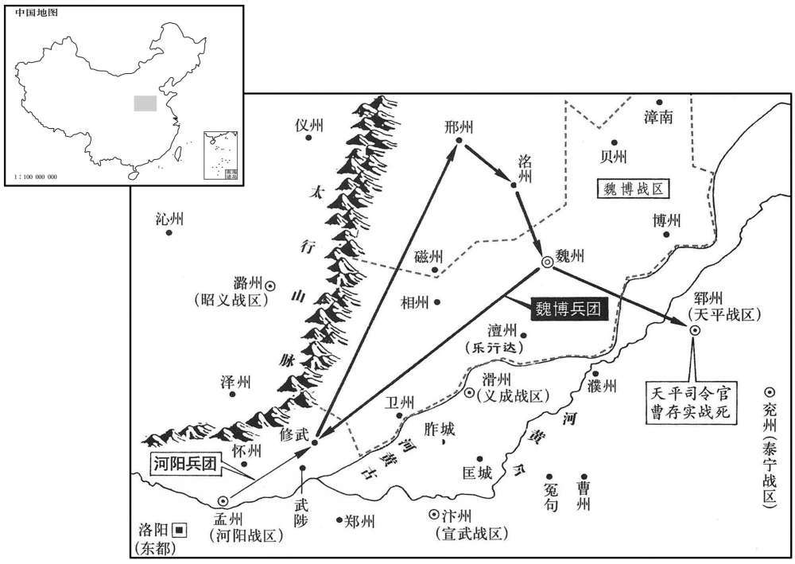
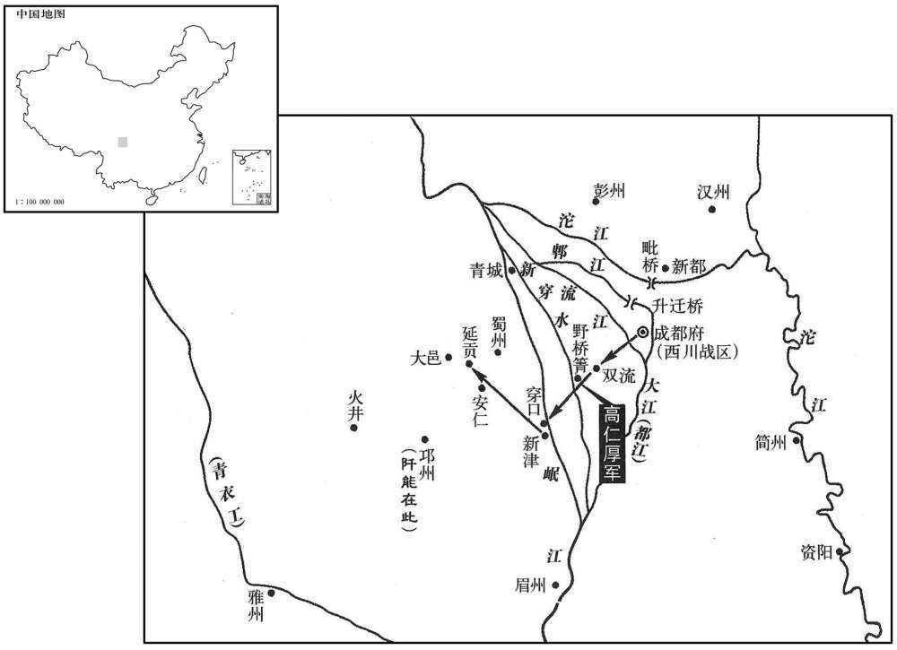
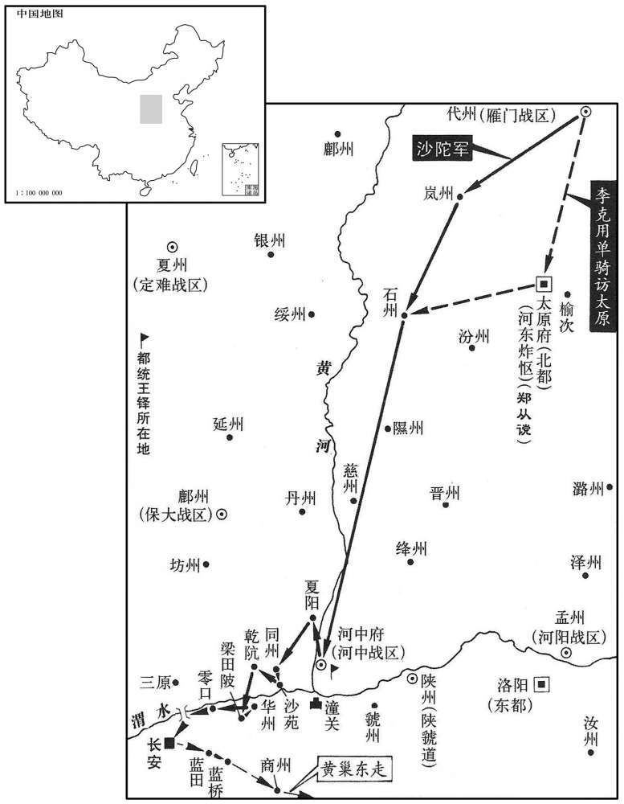
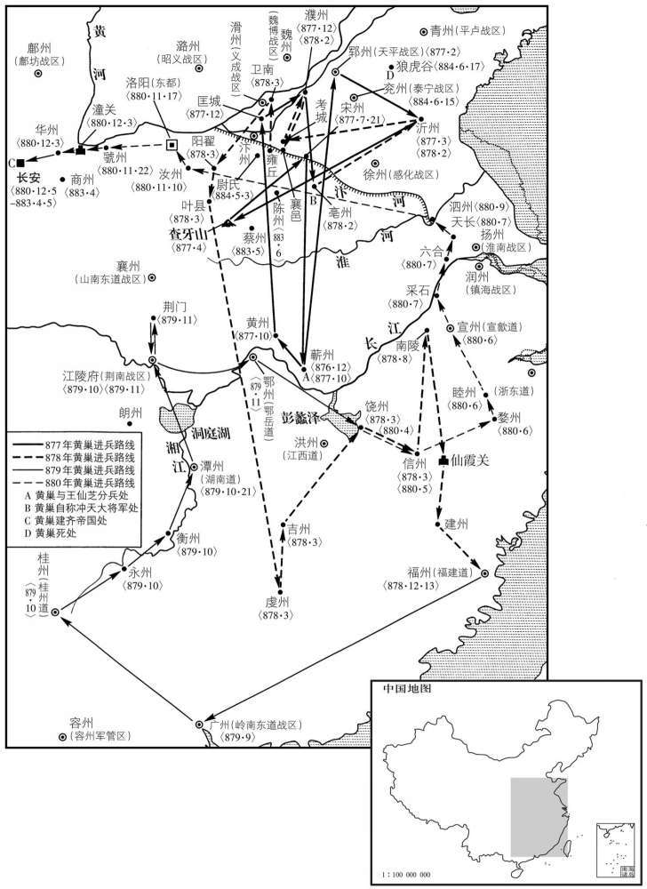
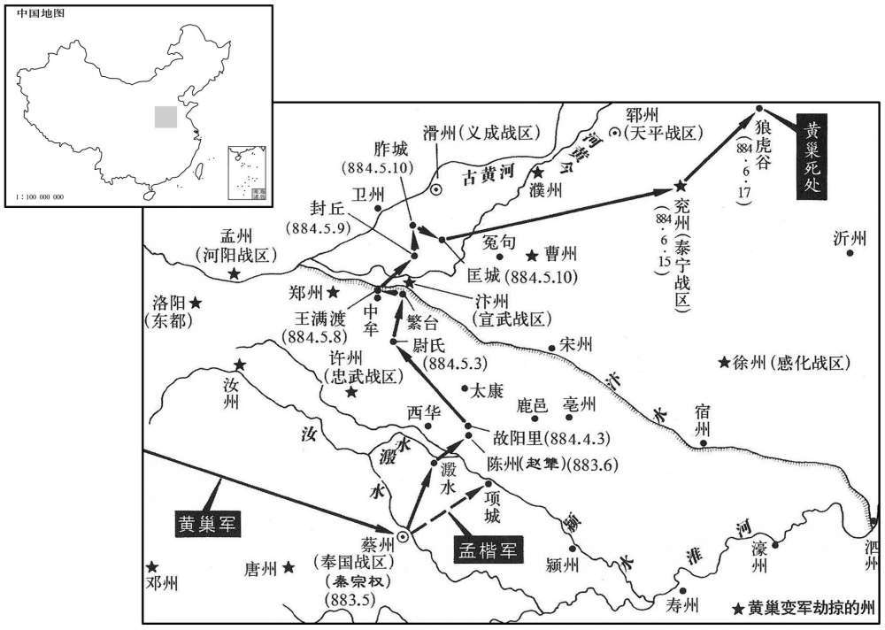
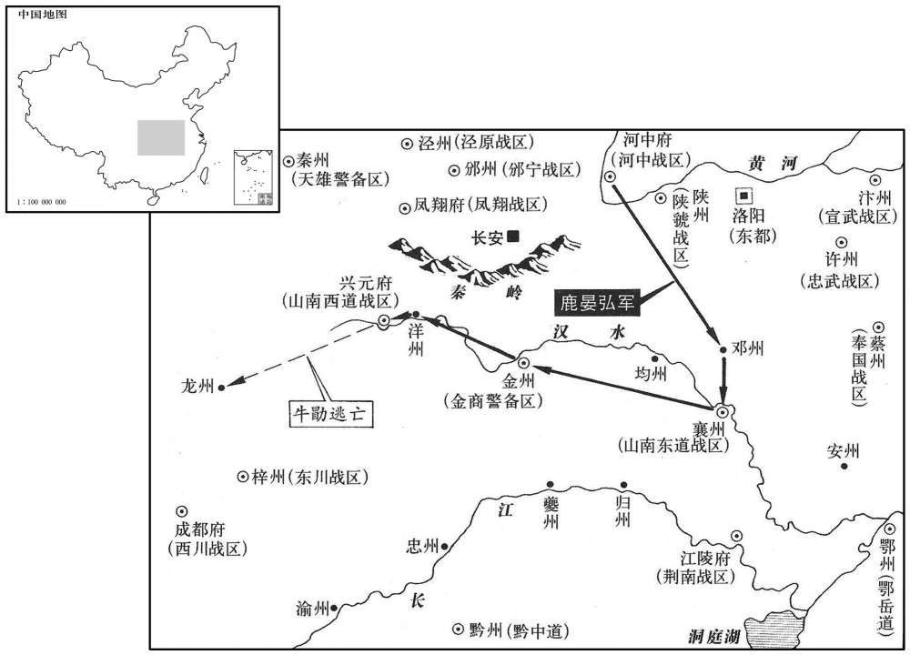

卷次与人物目录 / 卷255
资治通鉴 · 卷第二百五十五【唐纪七十一】
公元882年至公元884年 · 原文、白话与胡三省注
本页按胡注本编排保存全卷内容。白话采用本站所据译本，未可靠对应的内容另列说明；事件标题用于定位，并非原书文字。
本卷共111段原文，102段有译文对应，9段缺译或待核对。
卷第二百五十五【唐纪七十一】起玄黓摄提格（壬寅）五月，尽阏逢执徐（甲辰）五月，凡二年有奇。
卷首原文与注释
僖宗惠圣恭定孝皇帝中之下
公元882年 · 唐僖宗惠圣恭定孝皇帝中和二年
中和二年〔（壬寅、八八二）〕
上传原文的注释括号有异常，字符原样保留；无法可靠划分的段落默认全文显示。
本年记事分属相邻卷，按原书顺序分别保留：第254卷 · 第255卷。
本年事件索引（现代整理）
- 闵勖拒绝镇南节度使任命，钟传夺据洪州
- 高骈被夺兵权与盐铁财权，上表辱骂朝臣遭僖宗斥责
- 曹存实任天平节度使
- 黄巢攻兴平，诸军退屯奉天
- 诸葛爽加同平章事
- 张钧任泾原节度使
- 段彦谟与监军朱敬玫交恶，朱敬玫先发兵杀段彦谟
- 蜀中盗众响应阡能，官军误杀百姓邀功
- 钟传任江西观察使，危全讽趁机占据抚州
- 大雪围困宜君寨，贼众冻死甚多
- 韩求聚众响应阡能
- 周宝奏高骈擅任孙端为宣歙观察使
- 南诏请尽早迎娶公主，朝廷答复仍在商议礼仪
- 东方逵任保大节度使兼东面招讨使
- 韩简兼侍中
- 郑绍业拜相并出镇荆南
- 钱镠乘夜渡江袭击刘汉宏部，大破其军
- 韩简攻河阳，击败诸葛爽并掠邢、洺州
- 李国昌率族人自达靼返回代州
- 朱温杀黄巢监军降河中，朝廷授同华节度使并赐名全忠
- 李详谋降河中遭告发，被黄巢杀害
- 桂州军乱逐张从训，崔焯任岭南西道节度使
- 王敬武驱逐安师儒，自任平卢留后
- 汤群杀朝廷使者据岚州反叛，附从沙陀
- 韩秀升、屈行从起兵截断峡江路，陈敬瑄遣军讨伐
- 韩简攻郓州，曹存实战死，朱瑄坚守城池
- 朱温任河中行营招讨副使，赐名全忠
- 朝廷命王处存劝李克用归附，否则合兵讨伐
- 张浚劝王敬武脱离黄巢，敬武率军西赴勤王
- 钱镠再败刘汉宏军，王镇逃往诸暨
- 王重荣请李克用入关讨黄巢，李克用率军赴河中
- 李详旧部驱逐黄思邺，拥立王遇并献华州
- 高仁厚到蜀州招降百姓，六日平定阡能等五贼
- 高仁厚包围双流，劝降罗浑擎部众
- 罗浑擎被擒，寨中四千人听从高仁厚招降
- 高仁厚带领降众劝降句胡僧部，五千人归降
- 韩求寨众迎降，韩求投堑身亡
- 阡能被擒，罗夫子自刭，蜀中五贼之乱平定
- 陈敬瑄处置五贼首领并宽免从乱百姓
- 高仁厚任眉州防御使
- 陈敬瑄宽免阡能亲属，查明刺史借机夺田后放人
- 郑从谠攻克岚州，擒杀汤群
- 李克用任雁门节度使
- 郑绍业畏惧荆南军乱迟迟不赴任，陈儒暂领府事
- 齐克俭、王重荣加同平章事
- 李克用率四万军至河中，拒绝黄巢求和并渡河进驻同州
- 孟方立据邢、洺、磁州，自称昭义留后
- 秦彦遣子袭宣州，驱逐窦潏
五月，以湖南观察使闵勖权充镇南节度使。〔咸通六年，置镇南军于洪州。闵勖时据潭州，而以洪州节授之，欲使之与锺传相毙也。〕勖屡求于湖南建节，朝廷恐诸道观察使效之，不许。先是，王仙芝寇掠江西，〔先，悉荐翻。〕高安人锺传聚蛮獠，依山为堡，〔安本汉豫章建城县，唐武德五年，改名高安，属洪州。九域志：州南一百二十里。〕众至万人。仙芝陷抚州而不能守，传入据之，诏即以为刺史。至是，又逐江西观察使高茂卿，据洪州。〔抚州西北至洪州二百四十里。宋白曰：抚州临川郡，汉南昌县地，吴置临川郡；隋平陈，罢郡为州，时总管杨武通奉使安抚，即以抚为名。〕朝廷以勖本江西牙将，〔事见上卷上年。〕故复置镇南军，使勖领之；〔镇南军中废，今复置。若传不受代，令勖因而讨之。勖知朝廷意欲鬬两盗使相毙，辞不行。
五月，唐僖宗任命湖南观察使闵勖权且充当镇南节度使。闵勖多次请求在湖南设立节度使，朝廷恐怕各道观察使竟相效仿，而未予批准。在这之前，王仙芝到江西一带抢掠，高安人钟传收集蛮獠土著居民，借依山势修筑堡垒，人数多达一万。王仙芝攻隐抚州后不能固守，钟传率众占据了抚州，唐僖宗立颁诏，任命钟传为抚州刺史。到这时，钟传又驱逐江西观察使高茂卿，占据了洪州。因为闵勖来就是江西地方的牙将，所以朝廷又设置了镇南军，命令闵勖统领；如果钟传拒不受管，就命令闵勖对他进行讨伐。闵勖知道朝廷的意图是使他和钟传相互争，两败俱伤，因而推辞拒不赴任。
加淮南节度使高骈兼侍中，罢其盐铁转运使。骈既失兵柄，又解利权，攘袂大诟，〔是年春罢都统，已失兵柄；今解盐铁转运，又失利权。〕遗其幕僚顾云草表自诉，言辞不逊，其略曰：「是陛下不用微臣，固非微臣有负陛下。」又曰：「奸臣未悟，陛下犹迷，不思宗庙之焚烧，不痛园裬之开毁。」又曰：「王铎偾军之将，〔谓干符六年江陵之败也。愤，方问翻。〕又曰：「王铎愤军之将，〔谓干符六年江陵之败也。偾，方问翻。〕崔安潜在蜀贪黩，〔崔安潜击贼屡捷，无以指擿，故言其在蜀贪黩。懿宗咸通六年，安潜镇蜀。〕岂二儒士能战强兵！」又曰：「今之所明，上至帅臣，下及裨将，以臣所料，悉可坐擒。」〔帅，所类翻。将，即亮翻。〕又曰：「今贤才在野，憸人满朝，〔憸，思廉翻。朝，直遥翻。〕致陛下为亡国之君，此子等计将安出！」顾云盖序次高骈大诉之言以为表。上命郑畋草诏切责之，其略曰：「绾利则牢盆在手，〔谓专江、淮盐利也。牢盆二语，见汉武帝纪。〕主兵则都统当权，直至京北、京西、神策诸镇。悉在指挥之下，可佑董制之权；而又贵作司徒，荣为太尉，〔按新书高骈传；骈帅西川；已，进检校司徒；两京陷后，天子犹冀骈立功，进检校太尉。〕以为不月，如何为用乎﹖」又曰：「朕缘久付卿兵柄，不能翦荡元凶，自天长漏网过淮，〔事见二百五十二卷广明元。〕不出一兵袭逐，奄残京国，首尾三年，广陵之师，未离封部，〔离，力智翻。〕忠臣积离，勇士兴讥，所以擢用元臣，诛夷巨寇。」又曰：「从来倚使之意，一旦控告无门，凝睇东南，〔睇，大计翻，目小视也。南楚曰睇。〕惟增凄恻！」又曰：「谢玄破苻坚于淝水，〔见晋孝武帝纪。〕裴度平元济于淮西，〔见宪宗纪。〕未必儒臣不如武将。」又曰：「宗庙焚烧，园陵开毁，龟玉毁椟，谁之过欤！」〔用论语孔子之言。宝龟宝玉，皆椟藏之，在椟而毁，典守者不得辞其过也。〕又曰：「『奸臣未悟』之言，何人肯认！『陛下犹迷』之语，朕不敢当！」又曰：「卿尚不能缚黄巢于天长，安能坐擒诸将！」又曰：「卿云刘氏复兴，不知谁为魁首﹖比朕于刘玄、子婴，何太诬罔！」又曰：「况天步未倾，皇纲尚整，三灵不昧，百度俱存，君臣之礼仪，上下之名分，所宜遵守，未可堕陵。〔分，扶问翻。堕，读曰隳。〕朕虽冲人，安得轻侮！」〔恶声至，必反之，较计是非，明己之直，此委巷小人相诟者之为耳。古者文告之辞，汉、颒以下数责其罪，何至如此！通鉴书之以为后世戒。〕骈臣节既亏，自是贡赋遂绝。
唐僖宗命淮南节度使高骈兼任侍中，而罢免了他的盐铁转运使官职。高骈既已丧失兵权，又被解除了财权，捋起袖子破口怒骂，并指使他的幕僚顾云起草表文进行自我陈诉，所用言辞多有极不谦恭之处，其中说：“是皇帝陛下不重用我，而决不是我辜负了皇帝陛下。”又说：“奸臣没有醒悟，皇上还在迷惘，宗庙被火焚烧不忧虑，园陵被打开捣毁也不痛惜。”表文说道：“王铎在江陵战役中是个败将，崔安潜在四川贪婪轻狂，这两个儒士么能统管大军呢！”又说：“今天廷所重用的人，上自统帅大员，下到一般将领，若让我筹划料理，可以坐着就把他们全部擒获。”表文还说：“不要使子孙后代有抱怨痛恨的臣僚，不要让千古岁月留下汉朝淮阳王那样的刮席辱。我唯恐东土出现盗寇，刘季一类的人再次兴起。象轵道那样的灾害，难道只能是以前才有吗？”又说：“现今贤能有才的人闲置不用，鲜廉寡耻的人把持朝政，这是要让皇帝陛下做亡国的君主，他们这些人究竟能出什么计策！”唐僖宗郑畋起草诏书斥责高骈，诏书说：“你专营江、淮盐利，身为都统管领大兵，直到京北、京西、神策军及各防守，这些都是由你指挥的，由此可知你操掌的大权；后来又封你为司徒，荣升为太尉，如果这样还不算重用你，那么怎样才算重用呢？”又说：“朕长期把兵权交付给你，却不能扫荡剪除乱除贼魁首，黄巢从天长县漏网逃跑经过淮河，你竟一个兵卒也不派出去追击，致使他们占据残害京国，前后达三年之久。在广陵的军队，没有离开过驻地，忠良大臣怀有期望，勇猛士兵出现讥讽，因此启用元老诸臣，以剿杀当今大寇。”诏书又说：“你向来是杀图有所倚仗，而一旦控告呈诉找不到门路，就会斜眼凝视着东南方，只能增加哀伤。”又说：“谢玄在淝水能战胜苻坚，裴度在淮西能平灭吴元济，可见并不一定文臣不如武将。”诏书还说道：“宗庙被火焚烧，园陵被打开捣毁，宝龟美玉藏在匣内被毁，这是谁的过错？！”并说：“‘奸臣没有醒悟’这话，哪个人肯承认！‘皇上还在迷惘’这话，朕不敢应承认！”诏书责问高骈：“你尚且不能在长天县剿获黄巢，又怎么能坐着就把各位将领擒拿？！”又说：“你说刘季一类的人会再次兴起，不知头目是谁？你把朕比作刘玄、子婴，实在是太诬蔑欺罔了！”又说：“况且，大唐天下还未倾倒，朝廷纲纪尚且整肃，天道人心没有沦丧，各种法度全都存在，君主和臣子之间的礼仪，上上下下的名份，理所当然应该严格遵守，而不可有违定制。朕加然年龄幼小，但怎能容忍你如此轻狂的侮辱！”高骈既已丧失了做臣子的礼节，自此以后便断绝了进贡纳赋。
以天平留后曹存实为节度使。〔元年，曹全晸与贼战死，遂顺军中之请，命其兄子为帅。
本段缺少可靠对应白话，原文完整保留；未使用生成译文。
黄巢攻兴平，兴平诸军退屯奉天。〔时凤翔、邠宁军屯兴平。〕
黄巢攻打兴平，兴平地方的各路官军退到奉天屯驻。
加河阳节度使诸葛爽同平章事。
朝廷为河阳节度使诸葛爽加封同中书门下平章事。
六月，以泾原留后张钧为节度使。〔是年二月，王铎承制，以张钧为泾原留后，事见上卷。
本段缺少可靠对应白话，原文完整保留；未使用生成译文。
荆南节度使段彦谟与监军朱敬玫相恶，敬政别选壮士三千人，号忠勇军，自将之。〔玫莫杯翻。将，即亮翻。〕彦谟谋杀敬玫；己亥，敬玫先帅众攻彦谟，杀之，〔段彦谟据荆南事始二百五十三卷广明元年。帅，读曰率。〕以少尹李燧为留后。
刑南节度使段彦谟与监军朱敬玫相互仇视，朱敬玫特地精选强壮士兵三千人，号称忠勇军，亲自统领。段彦谟伙图杀害朱敬玫。已亥（二十八日），朱敬玫先发制人，带领士兵攻打段彦谟，将估彦谟杀死，让少尹李燧做荆南的留后。
蜀人罗浑擎、句胡僧、罗夫子各聚众数千人以应阡能，〔句，古侯翻。今蜀人从去声。阡能反见上卷是年三月。考异曰：张糀耆旧传曰：「二年，六月，补杨行迁为军前四面都指挥使千能亦散于诸处下寨，官军频不利。八月，罗浑擎反。十月，句胡僧反。」又曰：「九月，千能、浑擎、胡僧与官军大戢于干溪，官军不利。十二月，罗夫子反，众二二千。」句延庆耆旧传曰：「二年，五月，罗浑擎反。六月，句胡僧反，有四千余人。官军与阡能战于干溪，官军大败。是月，罗夫子反，聚众三千人。」实录：「六月，句胡僧反，有众二千余。官军与能战干溪，大败。」按张传上云十月胡僧反，下云九月胡僧与官军战，自相违；又阡能败差一年。今从实录，并附之六月。〕杨行迁等与之战，数于利，〔数，所角翻。〕求益兵；府中兵尽，陈敬瑄悉搜仓库门庭之卒以给之。是月，大战于干溪，〔据下文，则此时诸盗至双流，与官军对垒。干溪当在双流界。干，音干，官军大败。行迁等恐无功获罪，多执村民为俘送府，日数十百人；敬瑄不问，悉斩之。其中亦有老弱及妇女，观者或问之，皆曰：「我方治田绩麻，〔治，直之翻。〕官军忽入村系虏以来，竟不知何罪！」
本段缺少可靠对应白话，原文完整保留；未使用生成译文。
秋，七月，己巳，以锺传为江西观察使，从高骈之请也。传既去抚州，南城人危全讽复据之，〔南城，汉古县，唐属抚州。九域志，在抚州西二百二十里。〕又遗其弟仔倡据信州。〔仔，津之翻，史照祖似切寨倡，齿羊翻，又音唱。〕
秋季，七月，已巳（二十九日），朝廷任命钟传为江西观察使，这是根据高骈的请求任命的。钟传离开抚州，南城人危全讽又占据了抚州，并遣他的弟弟危仔倡占据信州。
尚让攻宜君寨〔后魏太平真君七年，置宜君县于宜君川，后置宜君郡，隋废郡为宜君县，唐并宜君县入京兆华原县。是时勤王之师盖于宜君故县立寨也。会大雪盈尺，贼冻死者什二三。
本段缺少可靠对应白话，原文完整保留；未使用生成译文。
蜀人韩求聚众数千人应阡能。〔考异曰：张糀耆旧传：「三年六月，韩求反，甚邛州界内贼首千能逦迤渐侵入蜀州界。」今从句延庆传及实录。〕
四川人韩求聚集了几千人，响应阡能。
镇海节度使周宝奏高骈承制以贼帅孙端为宣歙观察使。〔帅，所类翻。歙，书涉翻。〕诏宝与宣歙观察使裴虔余发兵拒之。
镇海节度使周宝上奏，说高骈自称秉承旨意，让贼寇头目孙端做宣歙地方的观察使。唐僖宗颁发诏书给周宝和宣歙观察使裴虔余，命他们派发大兵阻击孙端。
南诏上书请早降公主，〔嗣曹王龟年之使南诏也，上以宗室女为安化长公主，许婚。〕诏报以方议礼仪。考异曰：张糀耆旧传：「中和元年九月三日，云南骠信差布燮杨奇肱等赍国信来通和，迎公主。太师借副使仪注郊迎，布燮始相见，揖副使云：『请不拜。』太师闻，极怒。朝廷告以俟更议车服制数定，续有旨命，竟空还。」今从云南事状及实录。
本段缺少可靠对应白话，原文完整保留；未使用生成译文。
以保大留后东方逵为节度使，充京城东面行营招讨使。按李孝昌以鄜师勤王，去年为黄巢所攻，奔归本道。东方逵盖恣李孝昌者也。
本段缺少可靠对应白话，原文完整保留；未使用生成译文。
闰月，如魏专节度使韩节兼侍中。
本段缺少可靠对应白话，原文完整保留；未使用生成译文。
八月，以兵部侍郎、判度支郑绍业同平章事、兼荆南节度使。
八月，朝廷任命兵部侍郎、判度支郑绍业为同中书门下平章事，并兼充荆南节度使。
浙东观察使刘汉宏遣弟汉宥及马步都虞候辛约将兵二万营于西陆，谋兼并浙西，杭州剌史董昌遣都知兵马使钱镠拒之。壬子，镠乘雾夜济江，袭其营，大破之，所杀殆尽，汉宥、辛约皆走。〔自此杭、越交兵，而刘汉宏为钱镠禽矣。镠，力求翻。〕
浙东观察使刘汉宏派遣其弟刘汉宥及马步都虞候辛约，带领二万兵马在西陵安营扎寨，谋划兼并浙西地方，杭州刺史董昌派遣都知兵马使钱带兵抵抗。壬子（十三日），钱在夜间乘有大雾督兵过江，袭击刘汉宥和辛约的军营，势如破竹，敌营兵马多被斩杀，刘汉宥、辛约二人逃跑。
魏专节度使韩简亦有兼并之志，自将兵三万攻汀阳，败诸葛爽于修武；〔败，补迈翻。〕爽弃城走，简留兵戍之，因掠邢、洺而还。〔还，从宣翻，又如字。〕
魏博节度使韩简也有兼并的意图，新自带兵三万攻打河阳，在修武打败诸爽；诸葛爽放弃河阳城逃跑，韩简派留军队在此驻守，并到邢州、水一带抢掠一番回起。

李国昌自远靼帅其族迁于代州，李克用既据代州，故其父帅其族自达靼还。帅，读曰率。
本段缺少可靠对应白话，原文完整保留；未使用生成译文。
黄巢所署同州防御使未温屡请益兵以扞河中，知右军事孟楷抑之，不报。温见巢兵势日蹙，知其将亡，亲将胡真、谢瞳劝温归国；九月，丙戌，温杀其监军严实，举州降王重荣。温以舅事重荣，温母王氏，以与重荣同姓，故以舅事重荣。监，古衔翻。降，户江翻。重，直龙翻。〕王铎承制以温为同华节度使，使瞳奉表诣行在。〔朱温因王重荣以归唐，而重荣之后夷于朱温之手，唐祚亦夷于温矣。华，户化翻；下同。〕瞳，福州人也。
两版字句有差异，建议核对原文。
黄巢的部属同州防御使朱温多次请求增兵，以固守河中一带，知右军事孟楷把这事压下而不上报。朱温看到黄巢队伍的形势越来越紧迫，知道将以失败告终，亲信将领胡直、谢瞳二人规劝朱温归顺大唐。九月，丙戌（十七日），朱温杀掉军严实，率同州全部人马投降王重荣。朱温把王重荣当作舅舅来侍奉。王铎承旨意，让朱温做同华节度使，派谢瞳奉恭表文到皇帝年所报告。谢瞳是福州人氏。
李详以重荣待温厚，亦欲归之，为监军所告。黄巢杀之，〔详据华州见上卷上年。〕以其弟思邺为华州刺史。
李详看到王重荣对待朱很宽厚，便也想归顺他，被监军察觉告发，黄巢于是将李详杀掉，让他的弟弟黄思邺当华州刺史。
桂州军乱，逐节度使张从训，以前容管经略使崔焯为岭南西道节度使。〔焯，职略翻。〕
邕州军队发生叛乱，赶走节度使张从训，让以前的容管经略使崔焯做岭南西道节度使。
平卢大将王敬武逐节度使安师儒，自为留后。
平卢地方的大将王敬武赶趟走节度使安师儒，自已做这里的留后。
初，朝廷以庞勋降将汤群为岚州剌史，〔宋白曰：岚州，汉汾阳县地。汉末，其地无郡邑，曹公遂立新兴邵于此；后魏末于此置岚州，因界内岢岚山为名。降，户江翻。将，即亮翻。岚，卢含翻。〕群潜通沙陀；朝廷疑之，徙群怀州剌史，郑从谠遣使赍告身授之。冬，十月，庚子朔，群杀使者。据城叛，附于沙陀；壬寅，从谠遣马步都虞候张彦球将兵讨之。
起初，朝廷让庞勋的投降将领汤群做岚州刺史，汤群私下暗通沙陀，朝廷对他产生了怀疑，便调汤群到怀州当刺史，郑从谠派遣使臣拿着告文前往传授命令。冬季，十月，庚子朔（初一），汤群杀掉郑从谠派来的使臣，占据城邑反叛，归附沙陀。壬寅（初三），郑从谠派遣马步都虞候张彦球带兵讨伐汤群。
贼帅韩秀升、屈行从起兵，断峡江路，〔屈，居勿翻。断，音短。断峡江之路，则荆、蜀之信使不通，王命将不得行于东南。〕癸丑，陈敬瑄遣押牙庄梦蠂将二千人讨之，〔考异曰：张糀耆旧传：「三年，九月，峡路贼韩秀升，十月，峡路贼屈行从反。陈太师差押牙庄二梦将兵二千人，十月二十日，发往峡路。」句延庆耆旧传于中和二年七月韩求反下，又云「峡路韩秀升、屈行从反，川主选点兵士三千人，差押牙庄梦蠂押领，十月癸丑，发峡路，收讨韩秀升。」盖因十月讨之而言耳。实录取句传，而误于七月下云「韩秀升、屈行从为乱，敬瑄遣大将庄梦蠂以兵三千讨之。」新传曰：「涪州剌史韩秀升等乱峡中。」今从句传。〕又遣押牙胡弘略将千人继之。
贼寇将领韩秀升、屈行从起兵，截断峡江路，癸丑（十四日），陈敬派遣押牙将庄梦蝶带领二千人马进行讨伐，又续派押牙将胡弘略率领一千余人前往。
韩简复引兵击郓州，〔复，夫又翻。〕节度使曹存实逆战，败死。天平都将下吧朱瑄收余众，婴城拒守，〔下邑，汉古县，唐属宋州。九域志：在州东一百二十里。将，即亮翻。〕简攻之不下。诏以瑄权知天平留后。〔考异曰：实录：「曹存实继其叔父全晸为天平军节度使，未周岁而遇害。」旧传：「瑄为青州王敬武牙卒。中和初，黄巢据长安，诏征天下兵，王敬武遣牙将曹全晸率兵三千赴难关西，瑄已为军候。会青州敬急，敬武召全晸还，路由郓州，时郓将薛崇为草贼王仙芝所杀，崔君裕权知州事。全晸知其兵寡，袭杀君裕，据有郓州、自称留后。以瑄有功，署为濮州剌史，留将牙军。光启初，魏专韩简欲兼并曹郓，以兵济河，收郓，全晸出兵逆战，为魏军所败，全晸死之。瑄收合残卒，保州城，韩简攻围半年，不能拔。会魏军乱，退去。朝廷嘉之，授以节钺。」新傅与之同。薛居正五代史瑄传：「史和二年，张浚征兵于青州，敬武遣将曹全晸率军赴之，以瑄隶焉。贼败，出关，全晸以本军还镇。会郓帅薛崇卒，部将崔君预据城叛，全晸攻之，杀君预，因为留后，瑄以功授濮州剌史、郓州马步军都将。光启初，魏专韩允中攻郓，全晸为其所害。瑄据城自固，三军推为留后。允中败，朝廷以瑄为天平节度使。」按王仙芝死已久，曹全晸久为节度，去岁死，王敬武今岁始得青州，新、旧传、薛史皆误。今从实录。又新传，「瑄」作「宣」。欧阳修五代史记注云：今流俗以宣弟瑾，于名加「玉」者，非也。今从旧傅、薛史、实录。〕
韩简再次带兵进攻郓州，天平节度使曹存实应战还击，结果战败身亡。天平都将下邑的朱招收残存余部，环绕郓州城拒敌死守，韩简终于没有攻下郓州。唐僖宗颁诏，命朱暂代天平留后。
以朱温为右金吾大将军、河中行营招讨副使，赐名全忠。
唐僖宗以朱温为右金吾大将军、河中行营招讨副使，并赐名为全忠。
李克用虽累表请降，而据忻、代州，数侵掠并、汾，争楼烦监。〔数，所角翻。楼烦监，本属陇右节度，以岚州剌史兼领之，至德后，属内飞龙使，贞元十五年，始别置监牧使。〕义武节度使王处存与克用世为婚姻，〔按新书王处存傅，世籍神策军，家京兆万年县胜业里，为天下高赀。李国昌父子必利其富而与为婚姻也。〕诏处存谕克用：「若诚心款附，直且归朔州俟朝命；若暴棋如故，〔朝，直遥翻。横，户孟翻。〕当与河东、大同军共讨之。」〔是时郑从谠帅河东，赫连铎帅大同。〕
李克用虽然多次进呈表文请求投降，可是他占据忻州、代州，经常入侵抢掠并州、汾州，并争夺楼烦监。义武节度使王处存与李克用是世代姻亲，唐僖宗于是诏令王处存告诫李克用：“如果是真心诚意地归附，就应当暂且回到朔州等待朝廷的命令；如果仍象从前一样暴虐横行，朝廷就会汇集河东和大同的官军一同进行讨伐。”
以平卢大将王敬武为留后。〔王敬武既逐安师儒，朝廷遂命为留后。〕时诸道兵皆会关中讨黄巢，独平卢不至，王铎遣都统判官、谏议大夫张浚往说之。〔说，输苪翻。〕敬武已受黄巢官，爵不出迎，浚见敬武，责之曰：「公为天子蕃臣，侮慢诏使；不能事上，何以使下！」敬武愕然，谢之。既宣诏，将士皆不应，浚徐谕之曰：「人生当先晓逆顺，次知利害。黄巢，前日贩盐虏耳，〔事见二百五十二卷干符二年。〕公等拾累叶天子而臣之，果何利哉！今天下勤王之师皆集京畿，而淄青独至；一旦贼，平天子返正，公等何面目见天下之人乎！不亟往分功名、取富贵，后悔无及矣！」将士皆改容引咎，顾谓敬武曰：「谏议之言是也。」敬武即发兵从浚而西。
朝廷平卢大将王敬武为留。当时各道官兵都汇聚关中讨伐黄巢，唯独平卢的官军没有到来，王铎派都统判官、谏议大夫张浚前往规劝王敬武。王敬武已经接受了黄巢封给的官爵，拒不出城接迎，张浚见到王敬武，责问他说：“你是大唐天子的臣僚，却侮辱怠慢传诏的使臣，你不能侍奉朝廷怎么能指挥下属！”王敬武很吃惊，感激张浚的开导。接着宣读唐僖宗的诏书，将领和士兵都不呼应，张浚慢慢地谕劝他们说：“人生在世应当首先知道什么是反动判逆，什么是顺应时势，其次应当知道干什么有利，干什么有害。黄巢这个人，从前不过是个贩卖食盐的下贱人，你们舍弃几代的大唐天子而对黄巢称臣，究竟能有什么好处？现在天下救援大唐皇帝的军队都聚集在京畿一带，可是唯有淄青的官军不到；将来一旦贼寇平灭，大唐皇这回京师重新一统天下，你们还有什么脸面是去见天下的人？现在若是不立即前往相建功立业、争取荣华富贵，将来后悔可就来不及了！”平卢将领和士兵听了张浚的一番讲话的都收起刚才的面容，感到自己错了，纷纷回过头对王敬武说：“谏议大夫张浚的话对呀！”王敬武立即派发军队跟随张浚往西开进。
刘汉宏又遣登高镇将王镇将兵七万屯西陵，〔路振九国志作「屯渔浦」。按今渔浦在西陵上游，相去颇远。〕刘镠复济〔【章：十二行本「济」上有「夜」字；乙十一行本同；孔本同；张校同。】〕江袭击，大破之，斩获万计，〔复，扶又翻。〕得汉宏补诸将官伪敕二百余通；镇奔诸暨。〔宋白曰：诸暨，秦旧县，县界有暨浦、诸山，因以为名，在越州西南一百四十一里。〕
刘汉宏又派遣镇守登高的大将王镇带兵七万屯驻西陵，钱于夜间再次过江对王镇发动突然袭击，大破王军，斩杀擒获一万余人，缴获刘汉宏委命补授各位将官的伪敕书二百余件，王镇逃往诸暨。
黄巢兵势尚强，王重荣患之，谓行营都监杨复光曰：「臣贼则负国，讨贼则力不足，柰何﹖」复光曰：「鴈门李仆射，〔时李克用据代州；代州，鴈门郡也。诸家多以为克用时为鴈门节度使。〕骁勇，有强兵，其家尊与吾先人尝共事相善，〔杨复光养父玄价尝监盐州军，沙陀之归国也，先由盐州。后玄价为中尉。宜父子盖与之善。〕彼亦有徇国之志；所以不至者，以与河东结隙耳。诚以朝旨谕郑公而召之，必来，〔郑公，谓从谠也。结隙见上卷上年。朝，直遥翻。〕来则贼不足平矣！」东面宣忍使王征亦以为然。时王铎在河中，乃以墨敕召李克用，谕郑从谠。〔王铎为都都统，便宜从事，凡征调除授，皆得用墨敕。〕十一月，克用将沙陀万七千自岚、石路趣河中，〔趣，七喻翻。岚州南至石州一百八十里。〕不敢入太原境，独与数百骑过晋阳城下与从谠别，从谠以名马、器币赠之。
黄巢的兵势还比较强大，王重荣对此深表忧虑，他对行营都监杨复光说：“对贼寇称臣就辜负了大唐，讨伐贼寇又兵力不足，怎样才好？”杨复光说：“雁门节度使李克用，作勇猛，并拥有强大的军，他的父亲与我已故的养父曾经一同共事，相处很好，他也有以身殉国的宏大志愿，之所以他不来，是因为他与河东的郑从谠有矛盾。若是诚恳地用朝廷的旨意谕劝郑从谠，从而召唤李克用，李克用一定会来。李克用若来，则平贼寇不在话下了！”东面宣慰使王徽也这样认为。当时王铎在河中，就用墨敕召集李克用，谕劝郑从谠。十一月，李克用带领一万七千沙陀人马，从岚州、石州赶往河中，但不敢进入太原境内，只带几百骑兵经过晋阳城与郑从谠告别，郑从谠赠送给他名马、器具和钱币。
李详旧卒共逐黄思邺，〔考异曰：实录：「李详下牙队兵斩伪刺史黄思邺，推华阴镇使王遇为首，降河中。王铎承制除遇为剌史。」按黄邺与黄巢俱死于虎狼谷，实录误也。今从新黄巢传。〕推华阴镇使王遇为主，以华州降于王重荣，王铎承制以遇为剌史。
李详的旧部兵卒共同驱逐黄思邺，推华阴镇使王遇做首领，将华州降归王重荣，王铎受命委任王遇为刺史。
阡能党愈炽，侵淫入蜀州境；〔侵淫，以痈疽侵食寖淫为喻。〕陈敬瑄以杨行迁等久无功，以押牙高仁厚为都招讨指挥使，将兵五百人往代之。未发前一，日有鬻裇者，自旦至午，出入营中数四，逻者疑之，〔逻，郎佐翻。〕执而讯之，果阡能之谍也。〔谍，达协翻。〕仁厚命释缚，温言问之，对曰：「芋村民，阡能囚其父母妻子于狱，云，』汝诇事归，〔诇，古迥翻，又翾正翻。〕得实则免汝家；不然，尽死。』芋非愿尔也。」仁厚曰：「诚知汝如是，我何忍杀汝！今纵汝归，救汝父母妻子，但语阡能云：『高尚书来日发，〔语，牛倨翻；下赞语同。时滥授官爵，仁厚未立功，巳检校尚书矣。〕所将止五百人，无多兵也。』然我活汝一家，汝当为我潜语寨中人云：『仆射愍汝曹皆良人，为贼所制，情非得已。〔为我，于伪翻。语，牛倨翻。仆射，谓陈敬瑄。〕尚书欲拯救湔洗汝曹，〔湔，则前翻。湔，涤也，亦洗也。言百姓为贼所污染，湔洗与惟新。〕尚书来，汝曹各投兵迎降，〔降，户江翻。〕尚书当使人书汝背为「归顺」字，遣汝复旧业。所欲诛者，阡能、罗浑擎、句胡僧、罗夫子、韩求五人耳，必不使棋及百姓也。』」〔横，户孟翻。〕谍曰：「此皆百姓心上事，尚书尽知而赦之，其谁不舞跃听命！一口传百，百传千，川腾海沸，不可遏也。比尚书之至，〔比，必利翻；下此至同。〕百姓必尽奔赴如婴儿之见慈母，阡能孤居，立成擒矣！」〔【章：十二行本「矣」下有遂遣之」三字；乙十一行本同；孔本同。】〕
阡能一伙势和越来越大，一路侵掠淫乱进入蜀州境内。因为杨行迁等人长期以来没有立功，陈敬便任命押牙将高仁厚为都招讨指挥使，带领军队五百人前往取代杨行迁。在出发的前一天，有个卖面的人，从早晨到中午，在军营中出出入入好多次，巡逻的士兵对这人产生了怀疑，把他抓起来讯问，果然是阡能的间谍。高仁厚命令为他解开捆绑的绳索，和言悦色地对他进行询问，那个人说：“我是某个村子的人，阡能把我的父母妻子都囚禁在狱中，并说‘你刺探官军情况回来，得到证实就宽免了你们全家；不然的话，你们全家都要处死。’我并不是甘心情愿地为能效力。”高仁厚说：“我相信你是这样的，怎能忍心杀害你！现在我放你回去，去救你的父母和妻子，只是对阡能说：‘高仁厚明日就发兵，所带的军队不过五百人，没有多少人马。’可是，我救了你们一家人，你要为我对营寨的人偷偷传话说：‘陈敬仆射可怜你们都是善良的人，被贼寇控制，其情形实在是不得已。高仁厚要来拯救你们，为你们洗刷冤枉。高仁厚来的时候，你们要分别扔掉兵器前往投降，高厚会叫人在你们的北上书写‘归顺’二字，让你们回去仍操旧业。想要杀掉的，不过是阡能、罗浑擎、句胡僧、罗夫子和韩求这五个人，一定不会牵连到老百姓的。’”阡能派来的那个间谍说：“这些全是老姓心里想的事，尚书您都一清二楚而宽百姓，还有谁不高高兴兴地去听命！这些话一个人传给一百人，一百人传给一千人，就会象河川欢跃大海沸腾，势不可挡。等到尚书您到来，老百姓一定都投奔而来，就象婴儿见到慈爱的母亲。那时，能立无援，马上就可以擒获！”于是，高仁厚派他回去。
明日，仁厚引兵发，至双流，把截使白文现出迎；仁厚周视堑栅，怒曰：「阡能役夫，其众皆耕民耳，竭一府之兵，岁余不能擒，今观堑栅重复牢密如此，〔重，直龙翻。复，方目翻。〕宜其可以安眠饱食，养寇邀功也！」命引出斩之；监军力救，久之，乃得免。命悉平堑栅，纔留五百兵守之，余兵悉以自随，又召诸寨兵，相继皆集。
第二天，高仁厚率领军队出发，到达双流，把截使白文现出来迎接。高仁厚环视堑壕栅栏，怒气冲冲地说：“阡能一伙人，都是耕种土地的百姓，你们用尽一府的军队，长达一年多而不能擒获，现在看到你这里堑壕栅栏重重叠叠如此牢固，大概也可以安稳睡觉饱食终日而留养贼寇以邀功请赏了！”便命令把白文现拉出斩首；监军极力营救，劝了好久，白文现才免于一死。高厚下令把堑壕栅栏全部平掉，仅留下五百士兵守卫，其余士兵全都跟随他走，又召命各个寨子的士兵，都相继集合起来。
阡能闻仁厚将至，遣罗浑擎立五寨于双流之西，伏兵千人于野桥箐以邀官军。〔蜀人谓篁之间为箐。李心传曰：箐，林箐也，音咨盈翻。又薛能工律诗，有边城作二联云：「管排蛮户远，出箐鸟巢孤。」自注：蜀人谓税户为排，户谓林为丛箐。史照曰：箐，仓甸切，盖从去声，亦通。〕仁厚炯知，〔诇，火迥翻，又休正翻。〕引兵围之，下令勿杀，遣人释戎服入贼中告谕，如昨日所以语谍者。贼大喜，呼噪，争弃甲投兵请降，拜如摧山。仁厚悉抚谕，书其背，〔书其背作「归顺」字。〕使归语寨中未降者，寨中余众争出降。浑擎狼狈踰寨〔【章：十二行本「寨」作「堑」；乙十一行本同；孔本同；张校云：「弃寨」作「踰堑」。】〕走，其众执以诣仁厚，仁厚曰：「此愚夫，不足与语。」械以送府。悉命焚五寨及其甲兵，惟留旗帜，所降凡四千人。
阡能听说高仁厚将到，派遣罗浑擎在双流的西面设立五个营寨，在野桥箐一带高伏兵一千余人，以拦击官军。高厚刺探到这一军情，带兵把罗浑擎的军营包围起来，下令不要剿杀，而是派人脱掉军人装束潜入贼寇营中传话，象昨天对那个间谍说的一样。贼寇听后很是欢喜，呼喊叫嚷着，争先后地抛弃盔甲扔掉兵器请求投降，下拜的人多得高山倾倒一样。高仁厚对这些来降的人均加抚恤劝导，在他们的背上书写“归顺”二字，然后让他们加到贼寇营寨之中，告诉那些还未投降的人，于是营寨内剩余的人都争着跑出去投降。罗浑擎只好越过堑壕狼狈逃跑，结果被他的部属抓住送到高仁厚那里，高仁厚说：“这个蠢货，不值得和他说什么。”便给罗浑擎带上刑具送往官府。高仁厚下令把贼寇的五个营寨和盔甲武 全部烧掉，只留下收缴的旗帜，先后投降的人总共有四千名。
明旦，仁谓降者曰：「始欲即遣汝归，而前涂诸寨百姓未知吾心，或有忧疑，藉汝曹为我前行，过穿口、新津寨卜，示以背字告谕之，〔穿口，即新津新穿口也。为，于伪翻。〕比至延贡，可归矣。」〔九域志，邛州安仁县有延贡寨。安仁，秦临邛县地，武德二年，置安仁县。九域志：县在邛州东北三十八里。〕乃取浑擎旗倒系之，〔系，古诣翻。取其旗而倒系之，示已得其渠帅也。〕每五十人为队，〔【章：十二行本「队」下有「授以一旗，使前走」七字；乙十一行本同；孔本同；张校同；退斋校同。】〕扬旗疾呼曰：〔呼火故翻。〕「罗浑擎已生擒，送使府，大军行至。汝曹寨中者，速如我出降，立得为良人，无事矣！」至穿口，句胡僧置十一寨。寨，中人争出降；胡僧大惊，拔创遏之，众投瓦石击之，共擒以献仁厚，其众五千余人皆降。
第三天早晨，高厚对投降的人说：“开始时本想立即放你们回家，可是前面道上各个寨子的百姓还不知道我的心思，有的人会有忧虑和疑问，现在借助你们在前面行走，经过穿口、新津寨一带时，向那里的百姓展示你们北上的‘归顺’二字，把投降情告诉他们，等到了延贡，就放你们回去。”于是取来了罗浑擎的旗帜倒着挂起来，第五十个人结为一队，扛着旗子大声呼喊：“罗浑擎已经被活捉，送到官府去了，大唐王朝的军队来到这里。你们住在寨子中的人，快快象我们一样出来投降，马上就可以成为朝廷的良民，没有事了！”官军到达穿口，句胡僧设有十一个营寨，寨子中的人都争着跑出来投降，句胡僧大为惊慌，拔出剑来阻止，大家用瓦片石头打他，一起把他抓住献给高仁厚，句胡僧的部属五千余人都投降了。
又明旦，焚寨，使降者执旗先驱，一如双流至新津，韩求置十三寨皆迎降。求自投深堑，其众钩出之，已死，斩首以献。将士欲焚寨，仁厚止之曰：「降人犹未食。」使先运出资粮，然后焚之。新降者竞炊爨，与先降来告者共食之，语笑歌吹，〔歌呕唱也。吹，吹笙笛之类也。〕终夜不绝。
第四天早晨，高仁厚焚烧贼寇营寨，让投降的人打着旗子在前面走，象在双流出发时一样。到达新津，韩求设置的十三个营寨中的人都出来投降。韩求自己跳入深深堑壕，他的部属把他钩了上来，已经死了，便砍下他的脑袋送给高仁厚。官军将士要烧毁寨，高仁厚阻止他们说：“投降的人还没有吃饭。”让人先把资财粮食运出来，然后再烧营寨。刚刚投降的人相烧火做饭，与先前投降来向他们传话的人一同进餐，欢歌笑语，整夜都没有停。
明日，仁厚纵双流、穿口降者先归，使新津降者执旗先驱，且曰：“入邛州境，亦可散归矣。”罗夫子置九寨于延贡，其众前望新津火光，已不眠矣。及新津人至，罗夫子脱身弃寨奔阡能，其众皆降。
第五天，高仁厚把双流、穿口投降的人先行放回去，而让新津投降的人打着旗帜在前面走，并且对他们说：“进入邛州境内，也可以放你们回去。”罗夫子在延贡设置九个营寨，他的部属前一天晚上看到新津火光冲天，已是夜不能眠。等到新津投降的人赶到这里，罗夫子便仍下寨子逃奔阡能，他的部一部投降。

明日，罗夫子至阡能寨，与之谋悉众决战；计未定，日向暮，延贡降者至，阡能、罗夫子走马巡寨，欲出兵，众皆不应。仁厚引兵连夜逼之，明旦，诸寨佑大军已近，呼噪争出，执阡能，阡能窘急赴井，为众所擒，不死；又执罗夫子，罗夫子自刭。〔刭，古鼎翻。众挈罗夫子首，缚阡能，驱之前迎官军，见仁厚，拥马首大呼泣拜曰：「百姓负冤日久，无所控诉。自谍者还，〔即仁厚所纵鬻裇者也。百姓引领，度顷刻如期年。今遇尚书，如出九泉睹白日，已死而复生矣。」讙呼不可止。〔讙，与諠同。〕贼寨在他所者，分遣诸将往降之。仁厚出军凡六日，五贼皆平。〔按九域志，双流县在成都南四十里，自此而南，至新穿口，又南至新津，又南至延贡，又南至阡能寨，度其道里相去，各不过四五十里。高仁厚知蜀民之心非乐于从乱，而胁于五贼之威，因其心而诱导之，故胁从者皆望风降服，师不留行而五贼平平矣。考异曰：张糀耆旧专：「中和三年冬，千能转盛，官军战即不利。陈敬瑄乃遣仁厚讨之。十一月五日，仁厚进发，六日，擒罗浑擎，七日，擒句胡僧，得韩求首级，九日，擒千能，得罗夫子首级。十一月二十二日回戈，自城北门入。三日大设。五日议功。高公自检校兵部尚书检校左仆射，授眉州剌史。」张糀书语虽俚浅，或有抵牾，然事甚详。苟无此书，则仁厚功业悉沉没矣。句延庆传：「中和二年，仁厚枭五贼之首，凯旋归府。冬十二月戊寅，皇帝御大玄楼，高仁厚与将校等于清远桥朝见。至后三日，大设，高仁厚除授眉州剌史。」延庆不知据何书知千能败在二年冬，然要之仁厚擒韩秀升在三年十月前，则擒千能必更在前矣。十一月，己亥朔，无戊寅，日必误也。实录：「二年十月，草贼阡能于蜀州败官军，陈敬瑄遣高仁厚讨之。」实录见句传讨阡能事，承十月癸丑发峡路收讨韩秀升下，因附之。十月亦误也。实录又曰：「十二月，仁厚以阡能首来献，帝御大玄楼宣忍回戈将士，以仁厚为检校工剖尚书、眉州防御使。」亦因句传而去其日。又此年十月戊辰，升眉、汉、彭、绵等州并为防御使，故改剌史为防御耳。今高仁厚擒阡能既不知决在何年月，故因实录附于此。〕每下县镇，辄补镇遏使，使安集户口。
两版字句有差异，建议核对原文。
第六天，罗夫子逃到阡能的营寨，与阡能谋划如何动用全部人马进行决战。计策还没商定，天快黑了，高仁厚带着延贡投降的人赶到，阡能、罗夫子骑上战马巡视营寨，想派兵出战，部属都不听号令。高仁厚带领官军连夜逼近，次日早晨，各个营寨知道大唐官军已经接近，争先恐后地呼喊着往外跑，有人去抓阡能，阡能走投无路只好跳井，被众人拿获，没有死；同时去抓罗夫子，罗夫子自杀了。大家提着罗夫子的脑袋，绑着阡能，驱赶着他前往迎接官军，见到高仁厚，众人拥簇着高厚的马大哭泣着说：“老百姓忍辱含冤时间太长了，找不到地方控告申诉。自从你放回间谍，老百姓就伸长脖子盼望官军到来，度日如年。现在见到尚书您，就象走出阴间重见天日，死而复生一样。”欢呼的声音此起彼伏。其他地方的贼寇营寨，也分别派遣将领前往招降。高仁厚出兵总共六天，五大贼寇都被平灭。他每攻打下一个县镇，就补授镇遏使，令其安抚召集民人户口。
于是陈敬瑄枭韩求、罗夫子首于市，钉阡能、罗浑擎于〔【章：十二行本「于」上有「句胡僧」三字：乙十一行本同；孔本同。】〕城西，七日而寛之。〔钉，丁定翻。呙，古瓦翻。〕阡能孔目官张荣，本安仁进士，屡举不中第，归于阡能，为之谋主，为草书檄，〔为草，于伪翻。〕阡能败，以诗启求哀于仁厚，仁厚送府，钉于马市；自余不戮一人。
于是，陈敬把韩求、罗夫子二人的首级挂在市井，又将阡能、罗浑擎、句胡僧钉在城西，七天后把他们三人处以凌迟极刑。为阡能掌管文书的吏员张荣，来是安仁的进士，多次参加科而未被录取入仕，最后投奔阡能，为阡能出谋划策，起草书信檄文。阡能失败后，张荣做诗向高仁厚苦苦哀求，高仁厚把他送到官府，钉在马市处死，其余的没有再杀戮一人。
十二月，以仁厚为眉州防御使。
十二月，朝廷任命高仁厚为眉州防御使。
陈敬瑄牓邛州，凡阡能等亲党皆不问。未几，〔几，居岂翻。〕邛州刺史申捕获阡能叔父行全家三十五人系狱，请准法。〔准法，谓反逆亲属当从坐诛。〕敬瑄以问孔目官唐溪，对曰：「公已有牓，令勿问，而刺史复捕之，〔复，扶又翻。〕此必有故。今若杀之，岂惟使明公失大信，窃恐阡能之党纷纷复起矣！」敬瑄从之，遣押牙千晕往，集众于州门，破械而释之，因诣其所以然，果行全有良田，刺史欲买之，不与，故恨之。敬瑄召刺史，将按其罪，刺史以忧死。他日，行全闻其家田溪以免，密饷溪蚀箔金百两。〔博闻录：有蚀箔金、法金及分数者打成大薄片，以黄矾一两、鸡屎矾一两、胆矾半两、碙砂一分、信土一两、赤土一两衮研，以盐胆水调金片上炙干，更搽更炙；如此三度已来，用牛粪灰一重，重鬲下大火煅一日取，出温汤洗净。其存者金也，其融出者银也。〕溪怒曰：「此乃太师仁明，〔陈敬瑄检校太师，故称之。〕何预吾事，汝乃怀祸相饷乎！」还其金，斥逐使去。〔史言唐溪有古君子之风。〕
陈敬在邛州张贴告示，所有阡能等人的亲朋党羽都不问罪。不久，邛州刺史申报抓获阡能的叔父阡行全家三十五人，囚在狱中，请求正法。陈敬就此征求掌管文书的吏员唐溪的意见，唐溪说：“您已经张贴告示，下令对阡能的亲友不再问罪，可是邛州刺史还是把阡行全一家逮捕，这里面一定有原因。现在若是把阡行全一家杀掉，不但会使您失信于民，我还担心会导致阡能的党羽再次纷纷起兵谋反！”陈敬听从了唐溪的话，派遣押牙将牛晕前往，在邛州的州门口召集众人，打开阡行全一家人的刑具而释放他们，并顺便询问他们为什么被刺史抓起来，果然是阡行全家里有肥沃的田地，刺史想要收买，阡行全不同意，刺史便因此怀恨在心。陈敬叫来邛州刺史，要对他治罪，邛州刺史忧惧而死。后来，阡行全听说他们全家是由于唐溪的一番话而免于治罪，暗地里给唐溪送去蚀箔金一百两。唐溪怒气冲冲地说：“这都是太师陈敬仁慈开明，哪里有我什么事，你是在向我送祸呀！”他把阡行全送来的金子全都退回，斥责并赶走了派来的人。
河东节度使郑从谠奏克岚州，执汤群，斩之。〔汤群以城沙陀。〕
河东节度使郑从谠奏报攻克岚州，抓获汤群，并将其斩杀。
以忻、代等州留后李克用为鴈门节度使。
朝廷任命忻州、代州等处的留后李克用为雁门节度使。
初，朝廷以郑绍业为荆南节度使，时段彦谟方据荆南，绍业惮之，踰半岁，乃至镇。上幸蜀，召绍业还，以彦谟为节度使。彦谟为朱敬玫所杀，〔是年三月，朱敬玫杀段彦谟。〕复以绍业为节度使。绍业畏敬玫，逗遛不进，军中久无帅；至是，敬玫署押牙陈儒知府事。儒，江陆人也。
起初，朝廷任命郑绍业为荆南节度使，当时段彦谟刚刚占据荆南，郑绍业对段彦谟有些畏惧，过了半年，才到荆南。唐僖宗到达蜀地，召令郑绍业回去，任命段彦谟为荆南节度使。段彦谟被朱敬玫杀害，朝迁再次任命郑绍业为荆南节度使。郑绍业畏惧朱敬玫，逗留不前，荆南官军很长时间没有主帅；这时，朱敬玫便暂任押牙陈儒掌管荆南府事宜。陈儒是江陵人。
加奉天节度使齐克俭、河中节度使王重荣并同平章事。
朝廷加封奉天节度使齐克俭、河中节度使王重荣均为同平章事。
李克用将兵四万至河中，〔考异曰：实录在明年正月。今从新、太祖纪年录、薛居正五代史。〕遣从父弟克修先将兵五百济河尝贼。〔尝，试也。〕初，克用弟克让为南山寺僧所杀，其仆浑进通归于黄巢。自高浔之败，〔浔败，见上卷上年。〕诸军皆畏贼，莫敢进。及克用军至，贼惮之，曰：「嵵军至矣，当避其锋。」克用军皆衣黑，〔衣，于既翻。〕故谓之嵵军。巢乃捕南山寺僧十余人，遣仗赍诏书及重赂，因浑进通诣克用以求和。克用杀僧，哭克让，受其赂以分诸将，焚其诏书，归其使者，〔考异曰：太祖纪年录：「初，克让于潼关战败，避贼南山，隐于佛寺，夜，为山僧所害，纪纲浑进通冒刃获免，归黄巢。贼素惮太祖，闻其至也，将托情修好，捕害克让之僧十余人，杀之。巢令其将米重威赍重赂、伪诏，因浑进通见太祖。乃召诸将，领其赂，燔其伪诏以徇。」薛史克让傅曰：「干符中，以功授金吾将军，留宿卫。初，懿祖归朝，宪宗赐宅于亲仁坊。武皇之起云中杀段文楚也，天子诏巡使王处存夜围亲仁坊，捕克让。诘旦，兵合，克让与十余骑弯孤跃马，突围而出，官军数千人追之，比至渭桥，死者数百。克让自夏阳掠船而济，归于鴈门。」按克让（此克让恐当作克用，）于时犹在云州，云鴈门误也。复唐懿祖纪年录曰：「其兄克恭、克俭皆伏诛。」按是时国昌犹自请讨克用，朝廷必未诛其子。盖国昌、振武不受代后，克恭、克俭始被诛也。薛史又曰：「明年，武皇昭雪，克让复入宿卫。黄巢犯阙，僖宗幸蜀，克让时守潼关，为贼所败。」按国昌以干符五年不受代，朝廷发兵讨之。六年，克用未尝昭雪，克让何从得入宿卫！广明元年，国昌父子兵败，逃入达靼。其年冬，黄巢陷长安，克让何尝守潼关战败而死于佛寺！或者为朝廷所围捕时，逃入南山佛寺，为僧所杀，则不可知也。今事既难明，故但云为寺僧所杀而已。〕吊兵自夏阳渡河，〔武德三年，分合阳置河西县。干元三年，更河西曰夏阳，属河中府，后属同州。夏，户雅翻。〕军于同州。
李克用带领军队四万人到达河中，派遣他的堂弟李克修先带五百人马过河试探贼寇。当初，李克用的弟弟李克让躲避贼寇隐藏在南山佛寺，被寺里的僧人杀害，李克让的仆人浑进通投归黄巢。自从高浔一役吃了败仗，各路官军都畏惧贼寇，不敢向前。等到李克用的军队到来，贼寇害怕了，说：“乌鸦军队来到了，应当避开他们的锋芒。”李克用的军队穿衣服都是黑色，所以贼寇称他们是乌鸦军队。黄巢于是抓获南山佛寺的僧人十余名，派出使者带着诏书及丰厚的贿赂财物，通过浑进通的关系到李克用那里求和。李克用杀掉僧人，为弟弟李克让悲伤痛哭，又接受黄巢的贿赂财物，分给各位将领，而将黄巢的诏书烧掉，把使者打发回去。然后带领大军从夏阳过河，在同州安设军营。
孟方立既杀成麟，〔见上卷元年。〕引兵归邢州，潞人请监军吴全勖知留后。是岁，王铎墨制以方立知邢州事，方立不受，囚全勖；与铎书，〔不受铎命而与铎书，期必济其私欲。〕愿得儒臣镇潞州，铎以郑昌图知昭义军事。既而朝廷以右仆射、租庸使王徽同平章事，充昭义节度使，徽以车驾播迁，中原方援，方立专据山东邢、洺、磁三州，度朝廷力不能制，〔邢、洺、磁，于潞州为山东。度，徒洛翻。〕辞不行，请且委昌图。诏以徽为大明宫留守、京畿安抚制置修奉园陵使。〔大明宫即东内也。时黄巢犹据京师，大明宫为贼所窃处，园陵之开毁者亦多，以此职命授徽，以俟收复。〕昌图至潞州，不三月而去，方立遂迁昭义军于邢州，自称留后，表其将李殷锐为潞州刺史。〔为潞州叛孟方立张本。考异曰：实录：「中和四年正月，以义成行军司马郑昌图为中书舍人。三月，邢州军乱，杀其帅成麟，以中书舍人郑昌图权知昭义留后。」按成麟前已为孟方立所杀，况不在邢州，邢州乃方立所治也。又于时潞州已为李克修所据，昌图安得更往彼为留后！又其年五月，以右仆射王徽同平章事，充昭义节度使。徽上表恳述非便，乃复以本官充大明官留守。旧王徽传：「初，潞州军乱，杀成麟，以兵部侍郎郑昌图权知昭义军事。时孟方立割据山东三州，别为一镇，上党支邵惟泽州耳，而军中之人多附方立，昌图不能制。宰相奏请以重臣镇之，乃授徽检校尚书左仆射、同平章事，泽、潞、邢、洺、磁观察等使。时銮辂未还，关东聚盗，而河东李克用与孟方立争泽潞，以朝廷兵力必不能加，上表诉之曰：『郑昌图主留累月，将结深根；孟方立专据三州，转成积衅。招其外则潞人胥怨，抚其内则邢将益疑。祸方炽于既焚，计柰何于已失。须观胜负，乃决安危。伏乞群慈博求廷议，择其可付，理在从长。』天子乃以昌图镇之，以徽为诸道租庸供军等使。」新孟方立傅曰：「方立攻成麟，斩之，擅裂邢、洺、磁为镇，治邢为府，号昭义军。潞人请监军使吴全勖知兵马留后。时王铎领诸道行营都统，以潞未定，墨制假方立知邢州事。方立不受，囚全勖，以书请铎，愿得儒臣守。潞。铎使参谋中书舍人郑昌图知昭义留事，欲遂为帅。僖宗自用旧相王徽领节度。时天子在西河，关中云援，方立擅地而李克用窥潞州，徽度朝廷未能制，乃固让昌。图昌图治不三月，辄去。方立更表李殷锐为刺史，乃徙治龙冈。会克用为河东节度使，昭义监军祁审诲乞师，求复昭义军，克用杀殷锐，遂并潞州，表克修为留后。」按王铎以三年正月罢都统，则昌图知昭义留后必在二年也，昌图在潞不三月引去，今徽以潞让昌图，则徽除昭义必不在四年本月。实录年月皆误也。方立若已自称昭义留后，迁军额于邢州，则不止割据三州。若欲别为一镇，则应别立军名，必不与潞州并称昭义。若但以潞为支郡，当自附刺史，不以书与王铎更求儒臣；就使求之，铎亦当以昌图为潞州刺史，不云知昭义军事，又不得以泽州为支邵也。盖方立既杀成麟，以邢州乡里，欲徙镇之，故身往邢州，而潞人不从，故请全勖为留后。方立以众情未，洽未敢自立，故囚全勖，外示恭顺，托以中人不可为帅而请于王铎，乞附儒臣；其意以儒臣易制，欲外奉为帅而自专军府之政，渐谋代之也。既而昌图至潞，欲行帅职，而山东三州已为方立所制，不受帅命，独泽州在南，尚可号令耳。故王徽表云：「昌图主留累月，已结深根。」言在泽潞已久，人心稍附，己所不如也。又云：「方立专据三州，转成积鲎。」谓昌图欲行帅权，而方立不率将职，互相窥觎，故积鲎也。又云：「招其外则潞人胥怨，抚其内则邢将益疑。」谓今邢、潞已成衅隙，己至彼欲加惠于邢则潞人怨其宠贼，加惠于潞则邢将疑其图己也。又云：「须观胜负，乃决安危。」谓昌图能胜方立，然后昭义乃安也。昌图在滒终不自安，故以军府授方立而去。方立然后自称留后，徙军额于邢州，以潞为支郡，表殷锐为刺史。故新传徙治龙冈在殷锐为刺史下，此其证也。于是潞人怨而召沙陀，当徽除节制之时，克用犹未敢争泽潞也。吴全勖，疑是方立初入潞府时监军，故王铎使知留后，方立既囚之，疑其遂斥去。祁审诲恐是郑昌图时监军。太祖纪年录云：「方立虏审诲，自称留后。」薛居正五代史方立传云：「方立以邢为府，以审诲知潞州事。」互说不同。且既虏审诲，必不以知潞州。方立表李殷锐为刺史，而审诲犹依旧，必是后来监军，方立以其未尝异己，故不疑之。若尝被囚虏，必不复留。此之不实，昭然可知。疑唐末昭义数逐帅，刘广、成麟作乱被杀，人皆知之。记事者不详考正，或以先者为后，后者为先，差互不同，故诸书多抵牾不合耳。又薛史安崇阮传云：「安文佑初为潞州牙门将，光启中，军校刘广逐节度使高浔，据其城，僖宗诏文佑平之。既杀刘广，召赴行在，授邛州刺史。其后孟方立据邢、洺，攻上党，朝廷以文佑本潞人也，授昭义节度使，令讨方立，自蜀至泽州，与方立战，败殁于阵。」按诸书皆无文佑为昭义节度使事。况光启中，泽潞已为李克修所据，文佑来，当与克修战，不得与方立战也。其事恐虚，今不取。
本段缺少可靠对应白话，原文完整保留；未使用生成译文。
和州刺史秦彦使其子将兵数千袭宣州，逐观察使窦潏而代之。〔潏，食聿翻，又音聿，又音决。秦彦降高骈见二百五十三卷干符六年。其得和州，亦骈用之也。为彦以宣州兵入广陵张本。〕
和州刺史秦彦派遣他的儿子带领军队几千人袭击宣州，赶走观察使窦，取而代之。
译本中未与胡注本可靠对应的内容
以下另列供核对版本差异，不并入胡注本正文。
译本所附古文
[3]以天平留后曹存实为节度使。
译本白话
朝廷天平留后曹存实为节度使。
译本所附古文
[6]六月，以泾原留后张钧为节度使。
译本白话
六月，朝廷任命泾原留后张钧为节度使。
译本所附古文
[8]蜀人罗浑擎、句胡僧、罗夫子各聚众数千人以应阡能，杨行迁等与之战，数不利，求益兵；府中兵尽，陈敬悉搜仓门庭之卒以给之。是月，大战于乾，官军大败。行迁等恐无功获罪，多执村民为俘送府，日数十百人；敬不问，悉斩之。其中亦有老弱及妇女，观者或问之，皆曰：“我方治田绩麻，官军忽入村，系虏以来，竟不知何罪！”
译本白话
四川人罗浑擎、句胡僧、罗夫子各招聚了几千人马，响应能。朝廷派令杨行迁等人与他们作战，几次都失利。杨行迁等请求增兵，官府已无兵可派，陈敬便把看守仓库门庭的兵卒都搜集起来，派给杨行迁。这个月，双方在乾展开激战，结果官军惨败。杨行迁等人深恐没有立功而被治罪，便抓了许多村民充作俘虏送到官府，每天都有几十甚至上百人。陈敬不问青红皂白，把抓来的村民都杀了。其中，也有年老体弱的人及妇女，围观的人问他们为什么被抓，都回答说：“我们正在耕田绩麻，官军忽然进了村子，使强行抓来，我们也不知道犯不什么罪。”
译本所附古文
[10]尚让攻宜君寨会大雪盈尺，贼冻死者什二三。
译本白话
尚让攻让宜君寨，恰好天下大雪，有一尺多厚，贼寇被冻死的占十分之二三。
译本所附古文
[13]南诏上书清早降公主，诏报以方议仪。
译本白话
南诏王上书请求尽早迎娶公主，唐僖宗颁诏告诉南诏王正在商议车服礼仪。
译本所附古文
[14]以保大留后东方逵为节度使，充京城东面行营招讨使。
译本白话
朝廷任命保大留后东方逵为节度使，充当京城东面行营的招讨使。
译本所附古文
[15]闰月，加魏博节度使韩简兼侍中。
译本白话
闰七月，朝廷加封魏博节度使简兼任侍中
译本所附古文
[19]李国晶达靼帅其族迁于代州。
译本白话
李国昌从达靼率领其部落族人迁到一居。
译本所附古文
[38]孟方立既杀成麟，引兵归邢州，潞人请监军吴全勖知留后。是岁，王铎墨制以方立知邢州事，方立不受，囚全勖；与铎书，愿得儒臣镇潞州，铎以郑昌图知昭义军事。既而朝廷以右仆射、租庸使王徽同平章事，充昭义节度使，徽以车驾播迁，中原方扰，方立专据山东邢、、磁三州，度朝廷力不能制，辞不行，请且委昌图。诏以徽为大明宫留守、京畿安抚制置修奉图陵使。昌图至潞州，不三月而去，方立遂迁昭义军于邢州，自称留后，表其将李殷锐为潞州刺史。
译本白话
孟方立即已杀掉成麟，带兵回到邢州，潞州民人便请求监军吴全勖主持留后事宜。这一年，王铎受命以孟方立主持邢州事宜，孟方立拒不受命，囚禁吴全勖，写信给王铎，愿意招用儒臣镇守潞州，王铎任命郑昌图主持昭义的军事。不久，朝廷任命右仆射、租庸使王徽为同平章事，充任昭义节度使。王徽认为唐僖宗远迁蜀地，中原一带正扰乱不安，孟方立单独占据山东的邢、、磁三个州，估计朝廷无力控制这种局面，推辞而不赴任，请求暂且委派郑昌图为昭义节度使。朝廷又颁诏任命王徽为大明宫留守、京畿安抚制置修奉图陵使。郑昌图到达潞州任上，不到三个月就走了，孟方立于是把昭义军调到邢州，自称留后，进呈表章请任命他的将领李殷锐为潞州刺史。
公元883年 · 唐僖宗惠圣恭定孝皇帝中和三年
三年〔（癸卯、八八三）〕
上传原文的注释括号有异常，字符原样保留；无法可靠划分的段落默认全文显示。
本年事件索引（现代整理）
- 李克用部将李存贞击败黄揆，李克用任东北面行营都统
- 王铎罢都统出镇义成，田令孜因功加官
- 朱瑄任天平节度使
- 李克用会师大破黄巢军，黄巢部将乘机夺取华州
- 李罕之归附诸葛爽，诸葛爽夺河阳，韩简被部下杀死
- 李克用围攻华州，黄思邺、黄揆坚守
- 王镕任成德留后
- 郑绍业罢为分司，陈儒任荆南留后
- 庄梦蝶讨韩秀升、屈行从失败，朝廷命高仁厚援峡路
- 李昌言加同平章事
- 黄巢军屡败缺粮，遣兵救华州，李克用夜袭长安
- 杨行愍斩杀嫉妒他的都将，接掌庐州军务
- 吕用之诬陷俞公楚、姚归礼谋反，二将遭伏杀
- 朱全忠任宣武节度使，待收复长安后赴镇
- 钱镠击败刘汉宏，接连夺取三镇
- 高仁厚招降韩秀升、屈行从部众，平定峡路叛乱
- 李克用率军收复长安，黄巢焚宫西逃，官军劫掠
- 杨复光奏报收复长安，朝廷褒赏李克用等将领
- 朝廷诏令处斩曾为黄巢宰相的崔璆
- 孟楷攻蔡州败亡，秦宗权转而臣服黄巢
- 赵犨预备守陈州，斩孟楷后黄巢合兵围城
- 刘谦任封州刺史，获韦宙器重并结为姻亲
- 杨师立加同平章事
- 朱全忠赴汴州任宣武节度使，兼东北面招讨使
- 南诏遣杨奇肱迎娶公主，拒绝等候僖宗还京
- 李克用任河东节度使，赴雁门探望父亲
- 杨复光卒，部将散去，杨复恭称疾归隐
- 王镕、乐行达、朱瑄分别任本镇节度使
- 郑畋辞相赴彭州养病，裴淯拜相
- 李克用抵晋阳，李国昌任代北节度使
- 湖南置钦化军，闵勖任节度使
- 陈敬瑄加中书令并进封郡王
- 时溥任东面兵马都统，屯兵冢水
- 陈儒任荆南节度使
- 孟方立迁治邢州，李克用攻取潞州并杀李殷锐
- 宗女获封安化长公主，嫁予南诏
- 钱镠两次击败刘汉宏，斩其弟汉容与将领辛约
- 秦宗权围攻许州
- 鹿晏弘劫掠襄、邓等州，逐牛勖并据兴元
- 时溥杀李凝古并诬告其父，萧遘据理救下李损
- 浙东改置义胜军，刘汉宏任节度使
- 赵犨遣使求援，诸将救陈州，朱全忠进据亳州
春，正月，李克用将字存贞败黄揆于沙苑；〔败，补迈翻。〕己巳，克用进屯沙苑。揆，巢之弟也。王铎承制以克用为东北面行营都统，以杨复光为东面都统监军使，陈景思为北面都统监军使。
春季，正月，李克用的将领李存贞在沙苑打败黄揆。己巳（初二），李克用进驻沙苑。黄揆是黄巢的弟弟。政锋秉承旨意，任命李克用为东北面行营都统，杨复光为东面都统监军使，陈景思为北面都统监军使。
乙亥，制以中书令、充诸道行营都统王铎为义成节度使，令赴镇。田令孜欲归重北司，称铎讨黄巢久无功，卒用杨复光策，召沙陀而破之，故罢铎兵柄以悦复光；〔罢王铎兵柄在正月，李克用破黄巢在四月。盖田令孜以黄巢之劫已蹙，而杨复光之功必成，先以是悦之耳。卒，子恤翻。〕又以副都统崔安潜为东都留守，以都都监西门思恭为右神策中尉，充诸道租庸兼催促诸道进军等使。令孜自以建议幸蜀、收传国宝、列圣真容、散家财犒军为己功，令宰相藩镇共请加赏，上以令孜为十军兼十二卫观军容使。〔令孜从幸蜀，募神策新军为五十四都，离为十军，号神策十军。左．右卫、左．右骁卫、左．右武卫、左．右威卫、左．右领军卫、左．右金磿卫，谓之南牙十二卫。
两版字句有差异，建议核对原文。
乙亥（初八），唐僖宗以中书令、充诸道行营都统王铎为义成节度使，命他前赴镇所。田令孜想要加重北司权，奏称王铎讨剿黄巢时间长久而没立功，最后采用杨复光策略，召来沙陀才击败贼寇，因而罢免了王铎的兵权以取悦杨复光。朝廷又任命副都统崔安潜为东都留守，命都都监西门思恭为右神策中尉，充任诸道租庸兼催促诸道进军等使。田令孜自以为建议唐僖宗出走蜀地、收藏传国宝和各先帝的画像、散放家中资财犒赏官军有功，便指令宰相藩镇一同请求为他恩加赏赐，唐僖宗于是任命田令孜为神策十军兼南牙十二卫观军容使。
以天平留后朱瑄为节度使。
朝廷任命天平留后朱为节度使。
二月，壬子，李克用进军干坑，〔干坑，在沙苑西南。干，音干。〕与河中、易定、忠武军合；尚让等将十五万众屯于梁田陂，旧书作「良天坡」，在成店西三十里。明日，大战，自午至晡，贼众大败，俘斩数万，伏尸三十里。巢将王璠、黄揆袭华州，据之，王遇亡去。〔去年王遇据华州归国。璠孚袁翻。〕
两版字句有差异，建议核对原文。
二月，壬子（十五日），李克用率军前往乾，与河中、易定、忠武军等各路官军会合。尚让等人带十五万人马屯驻梁田陂。第二天，展开激战，从中午一直打到傍晚，贼寇大败，俘虏斩杀几万人，横卧在地上的尸体长达三十里，黄巢带领王、黄揆袭击华州，并占据了华州，王遇逃跑离去。
初，光州刺史李罕之为秦宗权所攻，弃州奔项城，〔李罕之与秦彦俱降高骈，盖骈使守光州。〕帅余众归诸葛爽，〔帅，读曰卒。〕爽以为怀州刺史。韩简攻郓州，半年，不能下；爽复袭取河阳，〔去年八月，韩简破诸葛爽，取河阳。十月，移兵攻郓州。〕朱瑄请和简及舍之，引兵击河阳。爽遣罕之逆战于武陟，魏军大败而还；大将澶州刺史桨行达先归，据魏州，军中共立行达为留后，简为部下所杀。〔懿宗咸通十一年，韩君雄得魏博，二世，十四年而灭。考异曰：旧传：「简攻河阳，行及新郡，为诸葛爽所败，单骑奔回，忧愤，疽发背而卒，时中和元年十一月也。」新传亦同。令从实录。「新郡」当作「新乡」。〕己未，以行达为魏博留后。
起初，光州刺史李罕之受到秦宗权的进攻，离弃光州奔往项城，率领剩余的人马归附诸葛爽，诸葛爽以李罕之为怀州刺史。韩简攻打郓州，半年也没能攻下，诸葛爽又袭击攻取河阳；朱请求讲和，韩简便放弃进攻郓州，带兵回攻河阳。诸葛爽派遣李罕之在武陟迎战，结果魏州军大败退回，大将澶州刺史乐行达先期回去，占据了魏州，军营上下便共同拥立乐行达为魏州留后，韩简被部下杀害。己未（二十一日），朝廷任命乐行达为魏博留后。
甲子，李克用进围华州，黄思邺、黄揆婴城固守；克用分骑屯渭北。
甲子（二十七日），李克用进军围攻华州，黄思邺、黄揆环绕华州顽固坚守；李克用分派一部分骑兵屯驻渭北。
以王镕为成德留后。
两版字句有差异，建议核对原文。
朝廷任命王熔为成德留后。
以郑绍业为太子宾客、分司，以陈儒为荆南留后。
朝廷任命郑绍业为太子宾客、分司，任命陈儒为荆南留后。
峡路招讨指挥使庄梦褋为韩秀升、屈行从所败，退保忠州，〔去年遗庄梦褋讨韩秀升等。败，补迈翻。〕应援使胡夕略战亦不利；江、淮贡赋皆为贼所阻，百官无俸。〔时车驾在蜀，江、淮租赋泝峡江而，上，今为韩秀升等所阻〕。云安、淯井路不通，民间乏盐。〔云安县，汉朐铁地，后周改曰云安县，唐属夔州，有盐官。九域志：在州西一百三十三里。盐监又在县西三十里。淯井在泸州西南二百六十三里。史照曰：淯井，汉犍为郡之汉阳县地，唐置长宁州。淯，音育。按「汉阳」当作「江阳」。〕陈敬瑄奏以眉州防御使高仁厚为西川行军司马，将三千兵讨之。〔考异曰：「张糀耆旧传曰：「中和四年，甲辰，春三月，峡路招讨指挥使庄梦蝶尚书为韩秀升所败，退至忠州。川主太师召眉州刺史高仁厚使讨秀升等，许以成功除梓帅，即日闻奏，拜行军司马，将步卒千人，三月五日进发。」句延庆耆旧传：「中和三年二月，庄梦蝶为贼所败，川主唤仁厚，奏授峡路招讨都指挥使，将兵三千人，三月辛丑进发。」实录：「三年二月，梦蝶为贼所败。陈敬瑄奏，以仁厚代梦蝶，将兵三千进讨，诏拜行军司马。」是月丁卯朔，无辛丑。辛丑乃四月五日，延庆误也。实录：「三年二月，敬瑄奏仁厚代梦蝶。」盖亦用句传年月。今从之。〕
峡路招讨指挥使庄梦蝶被韩秀升、屈行从打败，退到忠州固守，应援使胡弘略与贼寇作战也同样失利。这样，江、淮一带的贡赋都被贼寇阻截，朝廷百官无俸可供。云安、井一带的道路不通，民间缺乏食盐。于是陈敬奏请，任命眉州防御使高仁厚为西川行军司马，率领军队三千人前往讨伐韩秀升、屈行从。
加凤翔节度使李昌言同平章事。
朝廷加封凤翔节度使李昌言同平章事。
黄巢兵数败，食复尽，〔数，所角翻。复，扶又翻。〕阴为遁计，发兵三万搤蓝田道，〔搤蓝田道，所以通自武关南走之路。搤，于革翻。〕三月，壬申，遣尚让将兵救华州；李克用、王重荣引兵逆战于零口，破之。克用进军渭桥，骑军在渭北，克用每夜令其将薛志勤、康君立潜入长安，燔积聚，斩虏而还，〔零口，在京兆昭应县。积，子智翻。聚，从遇翻又慈庾翻。还，从宣翻。〕贼中大惊。
黄巢所带的人马多次战败，粮食也吃尽，暗中筹谋逃离长安，他派出三万兵马扼守住蓝田这一向南出走的要道。三月，壬申（初六），派遣尚让带兵救援华州；李克用、王重荣带领官军在零口迎击，获得胜利。李克用率令大军前赴渭桥，骑兵则布置在渭北，李克用每天夜间都命令将领薛志勤、康君立偷偷进入长安城，焚烧黄巢积聚的财物，斩杀虏获黄巢的人马，然后再退出，使贼寇大为惊慌恐惧。
以淮南择牙合肥杨行愍为庐州刺史。〔考异曰：十国纪年云：「杨行密，六合人，」今从薛居正五代史、徐铉吴录。〕行愍本庐州牙将，勇敢，屡有战功，都将忌之，白刺史郎幼复遣使出戍于外。行愍过辞，〔过，古禾翻。过都将而辞行也。〕都将以甘言悦之，问其所须，〔须者，意之所欲。〕行愍曰：「正须汝头耳！」遂起斩之，并将诸营，自称八营都知兵马使。幼复不能制，荐于高骈，请以自代。骈以行愍为淮南押牙，知庐州事，朝廷因而命之。行愍闻州人王勖贤，召，欲用之，固辞。问其子弟曰：「子潜，好学慎密，可任以事；弟子稔，有气节，可为将。」行愍召潜置门下，以稔及定远人季章为骑将。〔杨行愍后改名行密，事始此。定远，汉曹阳县地，梁改为定远县，唐属濠州。九域志：在州南八十里。骑，奇寄翻。将，即亮翻。〕
朝廷任命淮南押牙将合肥人杨行愍为庐州刺史。杨行愍本来是庐州的牙将，勇猛果敢，多次作战立功，行营都将很嫉妒他，白刺史郎幼复派遣他到外边驻防。杨行愍向都将辞行，都将对他好言相待，问他还有什么需要的东西，杨行愍说：“就是需要你的脑袋！”于是起身把都将斩杀，并统领各路军营，自称八营都知兵马使。郎幼复见已无法控制杨行愍，便向高骈推荐，请求以杨行愍接替自己。高骈于是任命杨行愍为淮南押牙将，掌管庐州事宜，朝廷因而委任杨行愍。杨行愍听说庐州人王勖很是贤能，把他召来，想起用他，王勖坚持推辞。杨行愍询问王勖的弟弟和儿子的情况，回答说：“儿子王潜，勤奋学习，办事谨慎周密，可以委用；弟弟的儿子王稔，很有气节，可以用为将领。”杨行愍便把王潜召来安置在身边，任命王稔和定远人季章为骑兵将领。
初，吕用之因左骁雄军使俞公楚得见高骈；用之横甚，〔横，户孟翻。〕或以咎公楚，公楚数戒用之少自敛，毋相累；〔数，所角翻。少，诗沼翻。敛，力俨翻。累，力瑞翻。〕用之衔之。右骁雄军使姚归礼，气直敢言，尤疾用之所为，时面数其罪，〔数，所具翻。〕常欲手刃之。癸未夜，用之与其党会倡定，归礼潜遣人爇其室，〔倡，音昌。爇，如悦翻，烧也。〕杀貌类者数人，用之易服得免。明旦，穷治其事，〔治，直之翻。〕获纵火者，皆骁雄之卒；用之于是日夜谮二将于骈。未几，骈使二将将骁雄卒三千袭贼于慎县，〔慎县，汉九江浚遒县地，古城在今县南。隋置慎县，唐属庐州。九域志：在州东北六十里。几，居岂翻。用之密以语杨行愍云：「公楚、归礼欲袭庐州。」行愍发兵掩之，二将不为备，举军尽殪，〔语，牛倨翻。殪，壹计翻。〕以二将谋乱告骈；骈不知用之谋，厚赏行愍。〔为杨行愍以庐州起张本。〕
两版字句有差异，建议核对原文。
起初，吕用之因为左骁雄军使俞公楚的关系而得以拜见高骈；吕用之过于蛮横霸道，有人因此责怪俞公楚，俞公楚几次劝戒吕用之稍微收敛一些，不要相互受到牵连，吕用之对俞公楚怀恨在心。右骁雄军使姚归礼，性格直爽敢于说话，尤其憎恶吕用之的所做所为，有时当面指责他的横暴行为，常常想亲手杀了他。癸未（十七日）夜，吕用之与他的党羽在娼妓家会聚，姚归礼暗中派人焚烧吕用之的卧室，杀掉好几个与他面貌相似的人，吕用之因更换衣服而免于一死。第二天早晨，吕用之严厉追究这件事，抓获放火的人，都是骁雄军的兵卒，吕用之于这天夜间向高骈诬陷俞公楚和姚归礼两位将领。不久，高骈命令俞公楚和姚归礼二人督率骁雄军三千人，在庐州境内慎县袭击贼寇，吕用之偷偷向杨行愍说：“俞公楚、姚归礼要攻打庐州。”杨行愍出其不意发动突然进攻，俞公楚、姚归礼二人没有任何准备，结果全军覆没。杨行愍又向高骈告发俞公楚、姚归礼谋反叛乱，高骈不知道这是吕用之的阴谋，竟重赏杨行愍。
己丑，以河中行营招讨副使朱全忠为宣武节度使，挨克复长安，令赴镇。
己丑（二十三日），朝廷任命河中行营招讨副使朱全忠为宣武节度使，等夺回长安，再令他前往镇所。
刘汉宏分兵屯黄岭、岩下、贞女三镇，〔三镇，皆当在婺、越间。〕钱镠将八都兵自富春击之，〔自富春渡江击三镇。富春即富阳县。〕破黄岭，擒岩下镇将史弁、贞女镇将杨元宗。汉宏以精兵屯诸暨，镠又击破之，汉宏走。
刘汉宏在黄岭、岩下、贞女三个镇分别驻扎军队，钱带八都兵从富春渡江发动进攻，攻战黄岭，抓获岩下镇将史弁和贞女镇将杨元宗。刘汉宠调集精锐人马驻守诸暨，钱又发动进攻占领诸暨，刘汉宏只好逃跑。
庄梦蝶与韩秀升、屈行从战，又败。其败兵纷纭还走，所在忍谕，不可遏；遇高仁厚于路，叱之，即止；仁厚斩都虞候一人，更令修娖部伍。〔娖，侧角翻。娖，整队伍也。〕乃召耆老，诣以山川蹊径及贼寨所据，喜曰：「贼精兵尽在舟中，使老弱守寨，资粮皆在寨中，此所谓重战轻防，其败必矣！」乃扬兵江上，为欲涉之将。贼昼夜御备，遣兵挑战，〔挑，徒了翻。〕仁厚不与交兵，潜发勇士千人执兵负笹，夜，由间道攻其寨，且焚之。〔间，古苋翻。〕贼望见，分兵往救之，不及，资粮荡尽，众心已摇。仁厚复募善游者凿其舟，相继皆沈，〔复，扶又翻。沈，持林翻。〕贼往来惶惑，不能相救，仁厚遣兵于要路邀击，妅招之，贼众皆降。秀升、行从见众溃，挥剑乱斫，欲止之，众愈怒，共执二人诣仁厚，仁厚诘之曰：「何故反﹖」秀升曰：自大中皇帝晏驾，〔大中皇帝，谓宣宗。〕天下无复公道，纽解纲绍。今日反者，岂惟秀升！成是败非，机上之肉，惟所烹醢耳！」仁厚愀然，命善食而械之。〔愀，七小翻。食，祥吏翻。善食，善以酒食食之也。〕夏，四月，庚子，献于行在，斩之。〔考异曰：张糀耆旧传：「中和四年，高仆射将步卒千年，三月五日进发，庄尚书三月二十日齐进。四月十四日，峡路申四月一日，大破峡贼。」句延庆耆旧传：三年，四月庚午，擒韩秀升，捷书到府。」按是月丁酉朔，无庚午。实录：「中和三年，四月庚子，仁厚擒韩升，献于行在。初，仁厚至峡，与贼战，其众大败，贼中小校缚秀升出降。」据郑畋集，有覆黔南观察使陈侁奏涪州韩秀升谋乱已收管在州候敕皆状云：「秀升劫害黔府，俘掠帅臣，占据涪陵，扼截江路，遽怀憯妄，求作察廉。陈侁爰命毛玭部领甲士直趋巢穴，便破城，池追逐渠魁，剿除逆党。」而诸家之说皆云仁厚所获。新传：「众怒，执秀升以降，仁厚槛车送行在，斩于市。」张糀耆旧传：「中和二年，三月，千能反，八月，罗浑擎反，十月，句胡僧反，十二月，罗夫子反。三年，北路秦黄巢正月十日败走，收复长安。正月，千能遣罗浑擎于新穿埧下二十七寨，把断水陆官路。六月，韩求反，其邛州贼首千能逦迤渐侵入蜀州界。九月，峡路贼韩秀升反。十月，峡路贼屈行从反。川主陈太师差押衙庄二梦将兵二千，十月二十日发往峡路讨韩升、屈行从等。十一月五日，高仁厚进发讨千能，九日，收邛州境内诸寨。十日，州县豁平。二十二日，回戈朝见。三日，大设。五日，议功，授眉州刺史。四年三月，庄梦褋退至忠州。川主差高仁厚将兵，三月五日进发。庄尚书三月二十日齐进。四月十四日申四月一日大破峡贼，擒秀升等。十五日，东川杨师立反。」句延庆耆旧传止于钞改张传为之，别无外事，但移浑擎反于中和二年五月，胡僧、罗夫子反于六月，韩求反于其年七月，庄梦褋讨韩秀升、屈行从以其年十月癸丑进发。高仁厚破阡能等五贼回朝见，在其年十二月戊寅。三年二月，庄梦褋为贼所败，川主遣高仁厚将兵，三月辛丑进发，四月庚什擒韩秀升，捷书到府。是月，杨师立反。四年，北路奏黄巢正月十日败走，收复长安。不知延庆改移年月别有所据邪，将率意为之也﹖至于三年杨师立反，四年收复长安，其为乖谬尤甚于糀。实录，千能、韩秀升等事，率依句传，而误以韩秀升反置七月，高仁厚讨阡能置十月，削戊寅、辛丑两日，改庚午为庚子，此其异于句传也。新纪：「三年十一月壬申，西川行军司马高仁厚及阡能战于邛州，败之。」续宝运录：「中和三年，涪州韩秀升反；冬，阡能反，高仁厚讨平之。」按贾纬唐年补录及实录所载铁券文皆云，「维中和三年岁次癸卯，十月午朔，十六日己酉，皇帝赐功臣陈敬瑄铁券。」其文有「戮阡能如翦草，除秀升若焚巢。」然则秀升之败，必在此日前也。张传破秀升在四年四月。其四年十月十日，亦载赐川主太师铁券，乃云：「维中和三年岁次癸卯，十月甲子朔，五日戊辰。」文与补录、实录同，其昏耄如此。句传取张事而改其年，实录用句年而改其日。其阡能、韩秀升等起灭，不佑的在何时。今从实录。〕
庄梦蝶与韩秀升、屈行从激战，再次失败。庄梦蝶的败兵纷纷逃走，进行抚慰劝导，也不能阻止；这些逃兵在路上遇见高仁厚，被他高声怒喝，逃兵当即停下；高仁厚斩杀了一名都虞候，重新下令整顿队伍。高仁厚找来当地高龄老人，向他们询问这一带山川小路以及贼寇营寨的情况之后，高兴地说：“贼寇的精锐人马都在船上，而让那些年老体弱的人守卫营寨，资财粮食都在寨子里，这就是人们所说的重视攻战轻视防守，他们一定会失败的！”高仁厚于是在江面上布置下军队，摆出要过江攻打的阵势。船上的贼寇日夜防御准备，并派兵前来挑战，高仁厚不与这些贼寇交战，而暗中派出一千名勇猛士兵手拿兵器肩扛藁秆，在夜晚从偏僻的小路前往攻打贼寇的营寨，并且放火焚烧。船上的贼寇看到这种情况，马上分派人马回营寨救援，已来不及了，贼寇的资财粮食全被毁掉，人心动摇。高仁厚又招募善于游泳的人凿破贼寇的船只，使其都相继沉没，贼寇来来往往惶恐迷惑，相互不能救援，高仁厚派遣军队在交通要道拦截贼寇，并且招降，最后贼寇都投降了。韩秀升、屈行从看到人马溃败不堪，挥剑乱砍，想进行阻止，大家更加愤怒，一同抓往韩秀升、屈行从二人送到高仁厚那里。高仁厚质问说：“你们为什么起兵谋反？”韩秀升回答说：“自从宣宗皇帝死后，天下再也没有公道，维系大唐王朝的纽带松懈，朝廷法度被废弃。当今谋反的人，难道只是我韩秀升？成者王侯败者贼，我已是桌子上的肉，任凭你们煮杀剁成肉酱了！”高仁厚听后不禁感到凄怆，命令让他美餐之后戴上刑具。夏季，四月，庚子（初四），高仁厚把韩秀升献到成都唐僖宗那里，韩秀升被斩杀。
李克用与忠武将庞从、河中将白志迁等引兵先进，与黄巢军战于渭南，一日三战，皆捷；义成、义武等诸军继之，贼众大奔。甲辰，克用等自光泰门入京师，黄巢力战不胜，焚宫室遁去。〔考异曰：旧纪：「四月，庚子，沙陀等军趋长安，贼拒之于渭桥，大败而还。李克用乘胜追之。己卯，黄巢收残众，由蓝田关而遁。庚辰，收京城，杨复光告捷。」按是月丁酉朔，无己卯、庚辰。敬翔梁太祖编遗录：「四月乙巳，巢焚宫闱、省寺、居第略尽，拥残党越蓝田而逃。明日，上与诸军收复长安。」实录：「甲辰，李克用与忠节将庞从、河中将白志迁、横野将汉存、朝吧将康师贞三败贼于渭桥，大破之。义成、义武等军继进。乙巳，巢贼燔长安宫室，收余众自光泰门东走，由蓝田关以遁。诸军进收京师。」新纪：「三月壬申，李克用及黄巢战于零口，败之。四月甲辰，又败之于渭桥。丙午，复京师。」旧传曰：「四月八日，克月合忠武骑将庞从遇贼于渭南，决战三捷，大败贼军。十日夜，贼巢散走。诘旦，克用由光泰门入，收京师，巢贼出蓝田、七盘路东走关东。」新传曰：「克用遣部将杨守宗率河中将白志迁、忠武将庞从等最先进击贼渭桥，三战三北，于是诸节度兵皆奋，无敢后。入自光泰门，贼崩溃，逐北至望春，入升阳殿闼。巢夜奔，众犹十五万，声趋徐州，出蓝田，入商山。」程匡柔唐补纪曰：「杨复光帅十道行节度使王重荣、李克用等兵士二万余人自光泰门入袭，逐至升阳殿下，杀贼盈万。黄巢军败，阵上奔逃，取蓝田关出。」后唐太祖纪年录：「乙巳，巢败，焚宫室东走，太祖进收京师。」唐年补录：「八日，克用等战渭南，三败贼军。九日，巢走。」按杨复光露布云：「今月八日，杨守宗等随克用自光泰门先入京师。」又云：「贼尚为坚阵，来抗官军，自卯至申，群凶大溃，实时奔遁，南入商山。」然则官军以八日入城，贼战不胜而走，此最可据，今从之。渭南之战，必在八日以前，诸书皆误也。〕贼死及降者甚众，〔降，户江翻。〕官军暴掠，无异于贼，长安室屋及民所存无几。〔几，居岂翻。〕巢自蓝田入商山，〔黄巢先遗兵搤蓝田道，故得由此路遁去。〕多遗珍宝于路，官军争取之，不急追，贼遂逸去。
李克用与忠武将军庞从、河中将军白志迁等带领人马先行进军，在渭南与黄巢军队展开激战，一天交战三次，都获得胜利；义成、义武等军相继赶到，黄巢人马只好争相败逃。甲辰（初八），李克用等从光泰门进入京师长安，黄巢顽强争战而不能取胜，最后放火焚烧宫殿后逃跑。贼寇战死和投降的人很从，但官军横暴抢掠，与贼寇没有什么两样，长安城内的房屋和百姓所剩无几。黄巢从蓝田进入商山，在路上扔上许多珍宝，官军争抢这些东西，而不急于追击，贼寇于是逃脱了。
杨复光遗使告捷，〔考异曰：张糀耆旧传：「中和三年，北路奏黄巢正月十日败走，收复长安城讫。三月，北路行营收城，将士并回戈。」句延庆耆旧传曰：「四年，北路奏黄巢正月十日败走，收复长安。三月，北路行营破黄巢将士并回。」延庆悉移糀四年事于三年，三年事于四年，而不移其月日，其为差谬又甚于糀。今但云告捷，更不着月日。〕百官入贺。诏留忠武等军二万人，委大明宫留守王徽及京畿制使田从异部分，守卫长安。〔分，扶问翻。〕五月，如朱玫、李克用、东方逵同平章事。升陕州为节度，以王重盈为节度使。又建延州为保塞军，以保大行军司马延州刺史李孝恭为节度使。〔赏破黄巢、复京城之功也。〕克用时年二十八，于诸将最少，〔少，诗照翻。〕而破黄巢，复长安，功第一，兵势最强，诸将皆畏之。克用一目微眇，〔眇，弥沼翻，一目小也。〕时人谓之「独眼龙」。
杨复光派遣使臣向唐僖宗报捷，朝中百官向皇上恭贺。僖宗颁诏，留下忠武等军二万人，委派大明宫留守王徽和京畿制置使田从异行进处置，驻守护卫长安。五月，朝廷为朱玫、李克用、东方逵加封同平章事。将陕州升格为节度，任命王重盈为节度使。又在延州建立保塞军，任命保大行军司马、延州刺史李孝恭为节度使。李克用当时年仅二十八岁，在各位将领中最年轻的，可是打败黄巢，收复长安，李克用的功劳实属第一，军队实力也最强大，各位将领对他都很畏惧。李克用的一只眼睛略微小些，当时人们都叫他“独眼龙”。

诏以崔璆家贵身显，为黄巢相首尾三载，不逃不隐，于所在斩之。〔载，子亥翻。〕
唐僖宗颁发诏令，指责崔家世富贵出身显赫，却在黄巢手下做同平章事先后三年，既不逃走也不隐藏，于是将他在住所斩杀。
黄巢使其骁将孟楷将万人为前锋，击蔡州，节度使秦宗权逆战而败；贼进攻其城，宗权遂称臣于巢，与之连兵。
黄巢派令他的骁将孟督率一万人马为前锋，进攻蔡州，节度使秦宗权带官兵迎战失败；贼寇攻打蔡州城，秦宗权于是向黄巢称臣，把他的队伍与黄巢的人马合并到一起。
初，巢在长安，陈州刺史宛丘赵犨谓将佐曰：〔宛丘，后魏项县也，隋改曰宛丘，唐属陈州；管下项城县，乃东魏侨置秣陆地，隋改曰项城。犨，昌牛翻。〕「巢不死长安，必东走，陈其冲也。且巢素与忠武为仇，〔巢自初起，与宋威、张自勉等累战，皆忠武兵也。〕不可不为之备。」乃完城堑，缮甲兵，积刍粟；六十里之内，民有资粮者，悉徙之入城。多募勇士，使其弟昶珝、子麓林分将之。〔将，即亮翻。〕孟楷既下蔡州，移兵击陈，军于项城；犨先示之弱，伺其无备，袭击之，杀获殆尽，生擒楷，斩之。巢闻楷死，惊恐，悉众屯冢水，〔珝，况羽翻。项城在陈州东南，冢水在西南。〕六月，与秦宗权合兵围陈州，掘堑五重，〔重，直龙翻。〕百道攻之。陈人大恐，犨谕之曰：「忠武素着义勇，陈州号为劲兵，况吾家久食陈禄，誓与此州存亡。男子当求生于死中，且徇国而死，不愈于臣贼而生乎！有异议者斩！」数引锐兵开门出击贼，破之。〔数，所角翻。〕巢益怒，营于州北，立宫室百司，为持久之计。时民间无积聚，贼掠人为粮，生投于碓硙，〔碓，都内翻。硙，五对翻。〕并骨食之，号给粮之处曰「春磨寨」。〔春磨寨，即设碓硙处。碓以春，硙以磨。磨，莫卧翻。〕纵兵四掠，自河南、许、汝、唐、邓、孟、郑、汴、曹、濮、徐、兖等数十州，咸被其毒。〔此河南，谓洛州河南府。被，皮义翻。〕
起初，黄巢在长安时，陈州刺史宛丘人赵对手下将领僚佐说：“黄巢如果不是在长安战死，一定是向东逃跑，陈州则首当其冲。并且黄巢一向仇视忠武军，我们不能不做准备。”于是赵把护卫陈州城的堑壕挖整完毕，修缮盔甲武器，大量积储草料粮食；在六十里之内，老百姓家有资财粮食的，都迁入陈州城内。赵还招募许多勇猛的士兵，让他的弟弟赵昶赵、儿子赵麓林赵分别统领。黄巢的骁将孟楷既已攻下蔡州，便调动军队去打陈州，率军驻扎在项城；赵先是向孟楷做出势单力薄的样子，乘他没有准备，发动突然袭击，孟楷的人马几乎全被斩杀擒获，本人也被活捉处斩。黄巢听说孟楷被处死，很惊慌恐惧，把所有的人马都调集到水一带驻守。六月，黄巢与秦宗权汇合人马围攻陈州，挖开层层密布的五重堑壕，从上百个道路向陈州发起进攻。陈州城内的人们极其恐慌，赵对他们说：“忠武军向来以正义勇敢著称，陈州的兵马号称为最强有力的队伍，况且我赵一家长期食用陈州的俸禄，誓与陈州共存亡。男子汉要以死相拼来求得生路，况且以身殉国而死，不比向贼寇称臣苟且偷生要好吗？有异议者一律斩首！“赵几次带领精锐人马打开城门出去攻打贼寇，挫败了贼寇的进攻。黄巢更加震怒，在陈州的北面建立行营，设立宫室百官，做长远的打算。当时民间钱粮都没有积储，贼寇抓掠百姓充作粮食，把活人扔到石磨里面去磨，连同骨头一起吃掉，号称供给粮食的地方是“舂磨寨”。黄巢放纵士兵到处抢掠，所有河南府许州、汝州、唐州、邓州、孟州、郑州、汴州、曹州、濮州、徐州、兖州等几十个州的地方，都受到黄巢的蹂躏。


初，上蔡人刘谦为岭南小校，节度使韦宙奇其器，〔咸通中，韦宙帅岭南。〕以兄女妻之。〔妻，七细翻。考异曰：新传：「宙弟岫，亦有名。宙在岭南，以从女妻小校刘谦。或谏止之，宙曰：『吾子孙或当依之。」』」薛居正五代史：「韦出镇南海，谦时为牙校，宙以犹女妻之。」北梦琐言曰：「丞相韦公宙出镇南海，有小将刘谦者，职级甚卑，气宇殊异，乃以从女妻之。其内以非我族类，虑招物议，风诸幕僚谏止之。丞相曰：『此人非常流也，他日吾子孙或可依之。』谦以军功拜封州刺史，韦夫人生子曰隐、曰岩。」十国纪年曰：「刘谦望，字德光，亦名知谦，后止名谦，唐咸通中为广州牙将，韦由以兄女妻之。」新传云岫知谦，恐误。今从琐言、纪年。〕谦击群盗，屡有功，辛丑，以谦为封州刺史。〔刘谦始此。〕
当初，上蔡人刘谦做岭南小校，节度使韦宙特别器重他，把哥哥的女儿嫁给他做妻子。刘谦攻打各股贼寇，连连立功，辛丑（初七），朝廷任命刘谦为封州刺史。
加东川节度使杨师立同平章事。
朝廷为东川节度使杨师立加封同平章事。
宣武节度使朱全忠帅所部百人赴镇，〔帅，读曰率。〕秋，七月，丁卯，至汴州。时汴、宋荐饥，公私穷竭，内外〔【张：「外」作「则」。】〕骄军难制，外为大敌所攻，无日不战，众心危惧，而全忠勇气益振。诏以黄巢未平，加全忠东北面都招讨使。〔为朱全忠以宣武兵并吞诸镇、仵移唐祚张本。〕
宣武节度使朱全忠率领部下几百人前往镇所，秋季，七月，丁卯（初三），朱全忠到达汴州。当时汴州、宋州一带接连闹饥荒，国库资财匮乏，百姓穷困潦倒，内部有骄横的军队难以控制，外面又受到强大的贼寇进攻，没有一天停止交战，很多人担忧害怕，可是朱全忠的勇气却更加振奋。唐僖宗颁发诏令，指出黄巢一伙还没平灭，加封朱全忠为东北面都招讨使。
南诏遣布燮杨奇肱来迎公主。诏陈敬瑄与书，辞以“銮舆巡幸，仪物未备，俟还京邑，然后出降。”奇肱不从，直前至成都。
南诏王派遣清平官杨奇肱来内地迎娶公主。唐僖宗诏令陈敬回信答复，说；“皇帝外出，公主婚嫁的礼仪物品尚未准备齐全，待皇帝回到京师长安之后再办公主婚事。”以此来推辞，杨厅肱不肯，直接前往成都去见唐僖宗。
李克用自长安引兵还鴈门，寻有诏，以克用为河东节度使，召郑谠诣行在。克用乃自东道过榆次，诣鴈门省其父。〔省，悉景翻。〕克用寻牓河东，安忍军民曰：「勿为旧念，各安家业。」〔以河东之人前此数与克用战，死其不自安，故牓谕之。考异曰：旧记：「五月，李克用充河东节度使。七月，诏郑从谠赴行在。」新纪：「五月，从谠为司空同平章事。」贾纬唐年补录：「五月，制：『李讳可同平章事，充河东节度使。』（注云：「按薛史，晋天福六年，二月，贾纬撰唐年补录上之。」又曰：「贾纬，真定获鹿人，以唐诸帝实录，自武宗以下缺而不纪，乃采掇近代传闻之事及诸家小说风其年月，编为唐年补录，凡六十五卷。历事唐、晋、汉、周，故不敢称克用名」。）旧从谠传：「三年，克用授河东节度，代从谠。五月十五日，从谠离太原，道途多寇，行次绛州，留驻数月。冬，诏使追赴行在，复辅政。」唐末见闻录曰：「五月，敕除李尚书鴈门节度使。六月二十五日，鴈门节度使李仆射般次于府东路过。六月内，有除目到，相公除替赴阙，鴈门节度李相公除河东节度使。十五日，相公取西明门进发。当月内，新使李相公有膀示，安抚在城军人百姓，曰：『无怀旧念，各仰安家』」又曰：「晋王讳克用，中和三年五月一日，自鴈门节度使拜平章事，充河东节度使。」按克用除河东及从谠复辅政，诸书月日不同。旧纪五月除克用，七月从谠赴行在，不言入相。新纪五月已为相，尤误。旧从谠传，五月十五日离太原，又与纪相违。唐年补录五月制，止褒赏克用、未玫、东方逵三人，制词鄙俚，疑其非实。唐末见闻录初云六月除河东，后复云五月一日。据实录、后唐太祖纪年录、薛居正五代史皆在七月，今从之。从谠此年九月为东都留守，光启二年二月方再入相。〕
李克用从长安带领军队回到雁门，不久唐僖宗颁诏，任命李克用为河东节度使，召令郑从谠前往成都。李克用于是从东道经过榆次，到达雁门探望他的父亲。不久。李克用在河东张贴告示，安慰官军和百姓说：“不要再思虑过去的事，应各自安置家口操持旧业。”
左骁卫上将军杨复光卒于河中；复光慷慨喜忠义，〔喜，许记翻。〕善抚士卒，军中恸哭累日，八都将鹿晏弘等各以其众散去。田令孜素畏忌之，闻其卒，甚喜，因摈斥其兄枢密使复恭为飞龙使。令孜专权，人莫与之抗，惟复恭数与之争得失，故令孜恶之，复恭因称疾归蓝田。〔数，所角翻。恶，乌路翻。〕
左骁卫上将军杨复光在河中府死去；杨复光为人慷慨，忠诚义气，善于安抚军内士卒，他死后士兵连哭数日，八都将鹿晏弘等率领自己人马分别散去。田令孜一向畏惧忌恨杨复光，听说杨复光死了，十分高兴，趁机排斥杨复光的哥哥枢密使杨复恭，任他为飞龙使。田令孜独揽大权，没有人敢和他抗争，只有杨复恭多次与他争论得失事宜，因此田令孜憎恨他，杨复恭于是托词有病回到蓝田。
以成德后王镕、魏博留后乐行达、天平留后朱瑄为本道节度使。
朝廷任命成德留后王熔、魏博留后乐行达、天平留后朱分别为本道节度使。
司徒、门下侍郎、同平章事郑畋，虽当播越，犹谨法度。田令孜为判官吴求郎官，〔员圆，田令孜之属官。为，于伪翻。〕畋不许；陈敬瑄欲立于宰相之上，畋以故事，使相品秩虽高，皆居真相之下，固争之；〔唐末，凡节度使带平章事及检校三省长官、三公、三师者，皆谓之使相。〕二人乃令凤翔节度使李昌言上言：「军情猜忌，不可令畋扈从过此。」〔元年，昌言逐畋以攘凤翔，故二人嗾之上言，以罢畋相。自是之后，朝廷进退宰相，率受制于藩镇矣。从，才用翻。〕畋亦累表辞位，乃罢为太子太保，又以其子兵部侍郎凝绩为彭州刺史，使之就养。〔宋白曰：唐垂拱三年，以益州九陇县置彭州，取古天彭关为名。养，羊尚翻。〕以兵部尚书判度支裴淯为中书侍郎、同平章事。
司徒、门下侍郎、同平章事郑畋，虽然是颠沛流离，仍然谨慎地维护朝廷的法度。田令孜请求为判官吴圆加封郎官，郑畋不同意；陈敬要把自己的职位提到宰相之上，郑畋认为在以往的旧例中，虽然节度使带平章事及检校三省长官、三公、三师的这些人称为使相，其品秩都在真正的宰相之下，因而坚决与陈敬争辩。田令孜、陈敬二人于是指令凤翔节度使李昌言向唐僖宗进言说：“军中人情猜疑，不能让郑畋随从皇上经过这里。”郑畋也多次进呈表文请求辞官，唐僖宗于是罢免郑畋的官职，封为太子太保，又以郑畋的儿子兵部侍郎郑凝绩为彭州刺史，让郑畋到那里去养老。朝廷任命兵部尚书判度支裴澈为中书侍郎、同平章事。
八月，甲辰，李克用至晋阳，〔李克用自此以晋阳为争天下根本。〕诏以前振武节度使李国昌为代北节度使，镇代州。
八月，甲辰（十一日），李克用到达晋阳，唐僖宗诏令任命以前的振武节度使李国昌为代北节度使，镇所设在代州。
升湖南为钦化军，以观察使闵勖为节度使。
朝廷将湖南的军队晋升为钦化军，任命观察使闵勖为节度使。
九月，加陈敬瑄兼中书令，进爵颖川郡王。
九月，朝迁加封陈敬兼任中书令，晋升爵位为颖川郡王。
感化节度使时溥营于冢水；〔遏黄巢之兵，且为陈州声援也。〕加溥东面兵马都统。
感化节度使时溥在不安设军，朝廷加封他为东面兵马都统。
以荆南留后陈儒为节度使。
朝廷任命荆南留后陈儒为节度使。
昭义节度使孟方立，以潞州地险人劲，屡篡主帅，欲渐弱之。乃迁治所于邢州，〔事见上年。帅，所类翻。〕大将家及富室皆徙山东，潞人不悦。监军祁审诲因人心不安，使武乡镇使安居受潜以蜡丸乞师于李克用，请复军府于潞州。〔武乡与河东巡属辽州邻境，故使其镇将乞师。是复方镇率分置镇将于诸县，县令不得举其职矣。宋白曰：武乡县本汉涅县地，晋始置武乡郡，县属焉。〕冬，十月，克用遣其将贺公雅等赴之，为方立所败；〔败，补迈翻。〕又遣李克修击之，辛亥，取潞州，〔考异曰：实录：「克用表李克修为节度使，于是分昭义军五州为二镇。」薛居正五史孟方立传曰：「潞人阴乞师于武皇，中和三年十月，武皇遣李克修将兵赴之，方立拒战大败之。由是连收泽、潞二郡，乃以克修为节度使。」按薛史张全义传：「诸葛爽表全义为泽州刺史，爽率，李罕之据泽州。」盖克修止得潞州，泽为河阳所取也。〕杀其刺史李殷锐。是后克用每岁出兵争山东，三州之人半为俘馘，野无稼穑矣。〔昭义邢、洺、磁三州在山东。〕
昭义节度使孟方立，因为潞州地势险要民人刚烈，几次强夺主帅，所以想逐渐削弱这里，于是把镇所迁移到邢州，各大将领的家属和富贵人家都搬到山东，潞州人很不高兴。监军祁审诲因为人心不稳定，派遣武乡镇使安居受偷偷地通过蜡丸传递消息请求李克用出兵，希望把军府重新设在潞州。冬季，十月，李克用派遣他的将领贺公雅等人前往，被孟方立打败；李克用又派遣李克修去进攻。辛亥（十八日），攻下潞州，杀掉潞州刺史李殷锐。从这以后，李克用每年都派出军队争夺山东的地盘，邢州、州、磁州这三个州的百姓有一半被俘获，田野里见不到庄稼。
以宗女为安化长公主，〔庆州安化郡。妻南诏。〔妻，七细翻。〕
两版字句有差异，建议核对原文。
唐僖宗诏令以宗室的女儿为安化长公主，嫁给南诏王。
刘汉宏将十余万众出西陵，将击董昌；戊午，钱镠济江迎战，大破之，汉宏易服持鲙刀而遁。〔使敌人见之以为庖丁，不疑为汉宏也。〕己，未汉宏收余众四万又战，镠又破之，斩其弟汉容及将辛约。
刘汉宏带领十几万人马从西陵出发，要攻打董昌。戊午（二十五日），钱过江迎战，击败了刘汉宏的队伍，刘汉宏更换衣服手拿鱼刀扮成厨师逃走。己未（二十六日），刘汉宏把残兵败将收集起来再次对战，钱又将刘汉宏打败，斩杀了他的弟弟刘汉容及其将领辛约。
十一月，甲子朔，秦宗权围许州。
十一月，甲子朔日（初一），秦宗权围攻许州。
忠武大将鹿晏弘帅所部自河中南掠襄、邓、金、洋，所过屠灭，声云西赴行在。〔宋白曰：金州，汉汉中郡之西城县也。魏文帝置西城郡，后改魏兴郡；梁置北梁州，寻改为南梁州；西魏置东梁州，因其地出金，改为金州。洋州，汉成固县地，后汉封班超于此。晋为南乡县，寻改西乡，西魏置洋州。帅，读曰率。洋，音祥。〕十二月，至兴元，逐节度使牛勖，勖奔龙州西山。〔龙州西山，松、荿二州界，时已没于蛮中。〕晏弘据兴元，自称留后。
忠武大将鹿晏弘率领部属从河中向南抢掠，路经襄州、邓州、金州、洋州，所经过的地方都遭到屠杀残害，鹿晏弘扬言说要往西开进，直奔成都唐僖宗的处所。十二月，鹿晏弘到达兴元，赶走节度使牛勖，牛勖逃奔龙州的西山。鹿晏弘于是占据兴元，自称留后。

武宁节度使时溥〔「武宁」，当作「感化」。〕因食中毒，〔中，竹仲翻。〕疑判官李凝古而杀之。凝古父损，为右散骑常侍，在成都，溥奏凝古与父同谋；田令孜受溥赂，令御史台鞫之。侍御史王华为损论冤，令孜矫诏移损下神策狱，〔为，于伪翻。下，户嫁翻。〕华拒而遣。萧遘奏：「李凝古行毒，事出暧昧，已为溥所杀，父损相别数年，声问不通，安得诬以同谋！溥恃功乱法，陵蔑朝廷，欲杀天子侍臣；若徇其欲，行及臣辈，朝廷何以自立！」由是损得免死，归田里。时令孜专权，群臣莫敢迕视，〔迕，五故翻。〕惟遘屡与争辩，朝廷倚之。
武宁节度使时溥因食物中毒，怀疑是判官李凝古所为而将李斩杀。李凝古的父亲李损，是朝廷的右散骑常侍，当时在成都，时溥奏参李凝古和他的父亲合谋杀害他；田令孜收受时溥的贿赂，命令御史台审讯李损。侍御史王华为李损鸣冤叫屈，田令孜假借唐僖宗的诏令要将李损转移投入神策狱，王华拒绝命令而不发遣李损。萧遘上奏说：“李凝古投毒谋害时溥案本来事实不清，而李凝古已被时溥杀死，李凝古与他的父亲李损已分别多年，彼此信息不通，怎么能诬陷他们父子是同谋！时溥倚仗有功践踏法度，凌辱蔑视朝廷，想要杀害天子身边的大臣；如果依从了他的狂妄要求，牵连在朝中臣僚，朝廷还怎么能够立足天下！”这样，李损才免于一死，解职回到故里。当时田令孜独揽大权，臣僚们没有敢不顺从的，只有萧遘多次与他争辩，成为朝廷的依靠。
升浙东为义胜军，以刘汉宏为节度使。
朝廷将浙东的军队升格为义胜军，任命刘汉宏为节度使。
赵犨遣人间道求救于邻道，〔间，古苋翻。〕于是周岌、时溥、朱全忠皆引兵救之。全忠与黄巢之党战于鹿邑，败之，斩首二千余级，遂引兵入亳州而据之。〔鹿邑，后魏陈留武平县也，隋开皇十八年，更名鹿邑，唐属亳州。九域志：在州西一百三十里。败，补迈翻。〕
赵派人抄近路向邻近各道求救，于是周岌、时溥、朱全忠都率领队伍前往救援。朱全忠与黄巢的人马在鹿邑展开激战，打败黄巢，斩杀二千余人，带领官军进入亳州而占据该城。
译本中未与胡注本可靠对应的内容
以下另列供核对版本差异，不并入胡注本正文。
译本所附古文
[2]成德节度使常山忠穆王王景崇薨，军中立其子节度副使熔知留后事，时熔生十年矣。
译本白话
成德节度使常山忠穆王王景崇去世，军营中拥立王景崇的儿子节度副使王主持留后事宜，当时王才十岁。
译本所附古文
[14]癸巳，李克用等拔华州，黄揆弃城走。
译本白话
癸巳，（二十七日），李克用等人攻克华州，黄揆离城逃走。
公元884年 · 唐僖宗惠圣恭定孝皇帝中和四年
四年〔（甲辰、八八四）〕
上传原文的注释括号有异常，字符原样保留；无法可靠划分的段落默认全文显示。
本年记事分属相邻卷，按原书顺序分别保留：第255卷 · 第256卷。
本年事件索引（现代整理）
- 鹿晏弘任兴元留后
- 乐行达获赐名彦祯
- 杨师立怨陈敬瑄欲以东川酬高仁厚，抗命后遭征召
- 周岌等求李克用救援，李克用出兵而诸葛爽拒绝让道
- 杨师立抗诏举兵，陈敬瑄奉命统辖西、东川军讨伐
- 朱全忠攻克瓦子寨，黄巢部将李唐宾、王虔裕投降
- 王镇擒黄碣降钱镠，钱镠击败刘汉宏部将娄赉
- 高澞揭发吕用之罪状，被高骈禁足后调任舒州
- 李神福以旗帜疑兵吓退攻舒州的陈儒
- 吴迥、李本再攻舒州，高澞弃城被杀，杨行愍平定叛军
- 路审中趁鄂州刺史死后募兵入据鄂州
- 赵犨兄弟坚守陈州，联兵击败黄巢后解围
- 黄巢东进遇洪水与追兵，连败后逃往兖州
- 高仁厚屯德阳迎击杨师立军
- 李克用赴汴州赴宴遭朱全忠伏击，冒雨突围
- 刘夫人劝李克用勿擅自攻汴，以书责问朱全忠
- 李克用养子李嗣源年仅十七，随军突围
- 李克用向周岌求粮遭拒，渡河返回晋阳
- 郑君雄、张士安夜袭高仁厚营寨，被伏击大败
- 高仁厚诱使逃兵归营，斩杨茂言并严明军法
- 高仁厚设伏击败郑君雄，迫其退回梓州
春，正月，以鹿晏弘为兴元留后。
春季，正月，朝廷任命鹿晏弘为兴元留后。
赐魏博节度使乐行达名彦祯。
唐僖宗赐魏博节度使乐行达名为彦祯。
东川节度使杨师立以陈敬瑄兄弟权宠之盛，〔田令孜、陈敬瑄兄弟也。〕心不能平。敬瑄之遣高仁厚讨韩秀升也，〔见上二月。〕语之曰：「成功而还，〔语，牛倨翻。还，从宣翻。〕当奏天子，以东川相赏。」师立闻之，怒曰：「彼此列藩，而遽以我疆土许人，是无天地也！」田令孜恐其为乱，因其不发兵防遏，征师立为右仆射。
东川节度使杨师立对陈敬、田令孜兄弟极度专权，心中愤愤不平。陈敬派遣高仁厚讨代韩秀升时，对高仁厚说：“大功告成后，我要奏请皇上，赏你做东川节度使。”杨师立知道这事，悖然大怒，气愤地说：“彼此都是大唐的属地，而竟然把我管辖的疆土许诺给别人，这实在是没有天公地道了！”田令孜担心杨师立发动叛乱，趁着他还没有发兵进行防范，就征调杨师立为右仆射。
黄巢兵尚强，周岌、时溥、朱全忠不能支，共求救于河东节度使李克用。二月，克用将蕃、汉兵五万出天井关；河阳节度使诸葛爽辞以河桥不完，〔谓河阳桥也。〕屯兵万善以拒之。克用乃还兵自、陕河中渡河而东。〔考异曰：唐末见闻录：「晋王三月十三日发大军讨黄巢。」太祖纪年录：「正月，太祖帅师五万自泽潞将下天井关，河阳屯万善，乃改辕蒲、陕渡河。」薛居正五代但云四年春。按四月已与巢战，三月十三发日晋阳，似太晚。又克用表云：「昨二月内，频得陈、许、徐、汴书牒。」今从旧纪。又克用自诉上表云：「遂从陕服，径达许田。」是于蒲、陕两道度兵也。〕
黄巢人马的势力还比较强大，周岌、时溥、朱全忠支持不住，一同和河东节度使李克用请求救援。二月，李克用带领蕃夷和汉族兵马五万杀出天井关；河阳节度使诸葛爽以河阳桥还没完工为理由进行推辞，在万善屯驻军队拒绝李克用经由这里。李克用于是带兵回去从陕州和河中渡过黄河向东挺进。
杨师立得诏书，怒，不受代，杀官告使及监军使，〔官告使，奉右仆射告身以征师立者也。监军使，东川监军。〕举兵，以讨陈敬瑄为名，大将有谏者辄杀之，进屯涪城，〔涪城，汉涪县地，东晋置始平郡，后魏改为涪城及潼县，隋改潼为涪城，唐初属绵州，后属梓州。九域志：在州西北五十五里。涪，音浮。〕遣其将郥镯袭绵州，不克。丙午，以陈敬瑄为西州、东州、山南西道都指挥、招讨、安抚、处置等使。〔处，昌吕翻。〕三月，甲子，杨师立移檄行在百官及诸道将吏士庶，数陈敬瑄十罪，〔考异曰：张糀耆旧传：「中和四年，四月十五日，东川杨师立反。」下载师立檄文，则云「三月三日」，自相违。今从实录。数，所具翻。〕自言集本道将士、八州坛丁共十五万人，〔按新书路岩传，岩帅西川，置定边军于邛州，扼大度，治故关，取坛丁子弟，教击刺，使补屯籍。则坛丁者，蜀中边邵民兵也。又按路振九国地，石处温事孟知祥，补万州管内诸坛点检指挥使。见得蜀中诸郡皆有坛丁。〕长驱问罪。诏削师立官爵，以眉州防御使高仁厚为东川留后，将兵五千讨之，以西川押牙杨茂言为行军副使。
杨师立接到调任他为右仆射的诏令，极其愤怒，拒不受命，杀掉朝廷的官告使和东川监军使，以讨伐陈敬为名兴兵反叛，大将中有谏阻的，杨师立当即斩杀，进军驻扎涪城，派遣他的将领郝蠲攻打绵州，没有攻克。丙午（十五日），朝廷任命陈敬为西川、东川、山南西道都指挥、招讨、安抚、处置等使。三月，甲子，（初三），杨师立向成都唐僖宗那里的文武百官和各道将士官民，历数陈敬的十大罪状，自己陈言招集本道将士、八州坛丁共十五万人，长驱直进前往问罪。僖宗颁发诏令，削去杨师立的官爵，任命眉州防御使高仁厚为东川留后，率领军队五千进行讨伐，命西川押牙将杨茂言为行军副使。
朱全忠击黄巢瓦子寨，拔之〔黄巢撤民居以为寨屋，谓之瓦子寨。〕巢将陕人李唐宾、楚丘王虔裕降于全忠。〔陕，失冉翻。降，户江翻。〕
朱全忠攻打黄巢的瓦子寨，予以攻克。黄巢的将领陕州人李唐宾、楚丘人王虔裕向朱全忠投降。
婺州人王镇执刺史黄碣，降于钱镠。〔碣，其谒翻。〕刘汉宏遣其将娄赉杀镇而代之，浦阳镇将蒋緕召镠兵共攻婺州，〔水经注：浦阳江源出乌伤县，东径诸暨县，与泄溪合。唐婺州，汉乌伤之地也，天赉十三载，分婺州之义乌、兰溪及杭州之富阳，置浦阳县。〕擒赉而还。碣，闽人也。
婺州人王镇捉拿剌史黄碣，向钱投降。刘汉宏派遣他的将领娄赉杀掉王镇而取代，镇守浦阳的将领蒋召来钱的兵马一同进攻婺州，擒获娄赉而回。黄碣是福建人。
高骈从子左骁卫大将军澞，〔从，才用翻。澞，麌俱翻。〕疏吕用之罪状二十余幅，密以呈骈，且泣曰：用之内则假神仙之说，蛊惑尊听；外则盗节制之权，残贼百姓；将佐惧，死莫之敢言。岁月浸深，羽翼将成，苟不除之，恐高氏交代勋庸，一朝扫地矣！」因呜咽不自胜。〔胜，音升。〕骈曰；「醉邪！」命扶出。明日，以澞状示用之，用之曰：「四十郎尝以空乏见告，〔澞第四十。〕未获遵命，故有此憾。」因出澞手书数幅呈之。骈甚惭，遂禁澞出入；后月余，以澞知舒州事。
高骈的侄子左骁卫大将军高，阵述吕用之的罪状，状纸达二十多篇，秘密呈交高骈，并且哭着说：“吕用之在内假借神仙鬼怪，迷惑您的耳目，在外则盗用节制权柄，残害地方百姓；将领佐官都惧怕大祸，而不敢说话。随着时光的流逝，吕用之的羽毛将要丰满，翅膀要硬起来，如果不把他铲除掉，恐怕高家世代的功劳，在一个早晨就会败落下去！”于是情不自禁地痛哭起来。高骈说：“你是喝酒过多了吧！”叫人把高搀扶出去。第二天，高骈把高的诉状展示给吕用之看，吕用之说：“高曾因手头拮据请求救助，没有获得准许，所以对我怀恨在心。”吕用之顺便拿出高原来亲手写的几封信呈送高骈。高骈十分惭愧，于是禁止高随便出入；一个月后，让高去掌管舒州事宜。
群盗陈儒攻舒州，澞求救于庐州。杨行愍力不能救，谋于其将李神福，神福请不用寸刃而逐之。乃多赍旗帜，间道入舒州，〔九域志：庐州南至舒州四百二十里。间，古苋翻。〕顷之，引舒州兵建庐州旗帜而出，指画地形，若布大陈状；贼惧，宵遁。〔贼畏庐州兵，故宵遁。兵有先声而后实，此其近之。〕神福，洺州人也。〔路振九国志曰：李神福，洺州人，隶上党军籍。高骈兼诸道行营都统，神福从州将戍淮海，因投杨行密。〕
盗贼陈儒攻打舒州，高向庐州的杨行愍请求救援。杨行愍估计靠他的兵力难以应救，便和他的将领李神福谋划对策，李神福自请不动刀枪就可赶走盗贼。于是带上许多旗帜，从偏僻的小路进入舒州，不久，李神福带领舒州的军队挂着庐州带来的旗帜纷纷出城，看着地形比比划划，就象布置大的作战阵容的样子；陈儒一伙盗贼害怕起来，乘夜间逃走了。李神福是州人。
久之，群盗吴迥、李本复攻舒州，〔复，夫又翻。〕澞不能守，弃城走，骈使人就杀之。杨行愍遣其将合肥陶雅、清流张训等将人击吴迥、李本、擒斩之，〔合肥，汉古县，唐带庞州。清流，汉全椒县地，隋置清流县，唐带滁州。〕以雅摄舒州刺史。秦宗权遣其弟将兵寇庐州，据舒城，〔开元二十三年，分合肥、庐江置舒城县，属庐州。九域志：在州西南一百一十里。〕杨行愍遣其将合肥田頵击走之。〔頵，于伦翻。〕
过了很久，盗贼吴迥、李本再次攻打舒州，高不能固守，扔下舒州城逃跑，高骈派人追上把高杀掉。杨行愍派遣手下将领合肥人陶雅、清流人张训等人率领官军攻打吴迥、李本，将他们擒获斩杀，便任命陶雅代理舒州剌史。秦宗权派遣他的弟弟带领人马侵扰庐州，占据舒城，杨行愍又派遣他的将领合肥人田将盗贼打跑。
前杭州刺史路审中客居黄州，〔路审中为董昌所拒，见上卷元年。〕闻鄂州刺史崔绍卒，募兵三千人入据之。武昌牙将杜洪亦逐岳州刺史而代之。
以前的杭州剌史路审中旅居黄州，他听说鄂州剌史崔绍死去，便招募三千人马占据了鄂州。武昌牙将杜洪也驱逐岳州剌史取而代之。
黄巢围陈州几三百日，〔几，居依翻。〕赵犨兄弟与之大小数百战，虽兵食将尽，而众心益固。李克用合许、汴、徐、之军于陈州；时尚让屯太康，〔太康，汉阳夏县，隋改曰太康，以县东有太康城也，唐属陈州。〕夏，四月，癸巳，诸军进拔太康。黄思邺屯西华，〔西华，汉县，唐属陈州。九域志：在州西八十里。〕诸军复攻之，〔复，扶又翻；下同。〕思邺走。黄巢闻之惧，退军故阳里，〔故阳里，在陈州城北。〕陈州围始解。
黄巢围攻陈州将近三百天，赵兄弟与黄巢大小战斗几百次，虽然官兵的粮食快有没了，可是大家抗击贼寇的决心更加坚定。李克用在陈州与许州、汴州、徐州、兖州的各路官军相会；当时，尚让驻守太康，夏季，四月，癸巳（初三），各路官军推进攻克太康。黄思邺驻扎西华，各路官军又攻打西华，黄思邺逃跑。黄巢听到这些战况很是恐惧，把人马撤退到故阳里，陈州开始解围。
朱全忠闻黄巢将至，引军还大梁。五月，癸亥，大雨，平地三尺，黄巢营为水所漂，且闻李克用将至，遂引兵东北趣汴州，〔趣，七喻翻。〕屠尉氏。尚让以骁骑五千进逼大梁，至于繁台；〔繁台，本师旷吹台，梁孝王增筑。水经注：吹台，在浚仪城南牧泽之右。牧泽者，今之浦关泽，即此泽也。〕宣武将丰人朱珍、南华庞师古击却之。〔丰，汉县，唐属徐州。九域志：在徐州西北一百四十里。〕全忠复告急于李克用，丙寅，克用与忠武都监使田从异发许州，戊辰，追及黄巢于中牟北王汉渡，〔按旧书帝纪，王汉渡乃汴河所经津济之地。乘其半济，奋击，大破之，杀万余人，贼遂溃。尚让帅其众降时溥，〔帅，读曰率；下同。〕别将临晋李谠、曲周霍存、甄城葛从周、冤句张归霸及〔【章：十二行本「及」下有「从」字；乙十一行本同；孔本同；张校同。】〕弟归厚帅其众降朱全忠。〔临晋，古地名，隋分猗氏，置桑泉县，天宝十三载，改为临晋，属河中府。九域志：在府北六十五里。曲周，汉古县，中废，隋分洺水复置，唐属洺州，未废为镇，属鸡泽县。「甄城」，当作「鄄城」，亦汉古县，唐带濮州。史言朱全忠后吞诸镇，多用所降黄巢将。鄄，古掾翻。考异曰：崇文院有梁功臣列传，不着撰人名氏，云：「张归厚，祖兴，父处让。归厚中和末，与伯季自冤句相率来投。」薛居正五代史：「张归霸祖进言，父实。」归厚传无父、祖，但云与兄归霸皆来降。据梁功臣传，父祖与归霸不同，当是从弟。〕巢踰汴而北己巳，克用追击之于封丘，又破之。庚午夜，复大雨，贼惊惧东走，克用追之，过胙城、匡城。〔胙城，汉南燕县，隋改曰胙城，唐属滑州。九域志：在州南九十里。宋白曰：胙城县，本古之胙国，又为古之燕国，汉为南燕县。隋文帝因览奏状，南见燕县名，因曰：「今天下一统，何南燕之有！」遂改为胙城。〕巢收余众近千人，东奔兖州；〔近，其靳翻。〕辛未，克用追至冤句，骑能属者纔数百人，〔属，之欲翻。〕昼夜行二百余里，人马疲乏，粮尽，及还汴州，欲裹粮复追之，获巢幼子及乘舆器服符印，〔乘绳证翻。〕得所掠男女万人，悉纵遣之。
两版字句有差异，建议核对原文。
朱全忠听说黄巢快要到来，带领军队回到大梁。五月，癸亥（初三），天下大雨，雨水淹没地面三尺深，黄巢的军营被水淹漫，又听说李克用将要来到，于是带领人马往东北方向的汴州奔去，进屠尉氏。尚让带领精壮骑兵五千逼近大梁，到达繁台，宣武将军丰州人朱珍、南华人庞师古将尚让击退。朱全忠又向李克用告急请求援救，丙寅（初六），李克用与忠武都监使田从异从许州出发，戊辰（初八），在中牟北面的王满渡追赶上黄巢，李克用乘黄巢人马渡到汴河一半的时候，奋勇攻打，击败黄巢的队全，斩杀一万余人，贼寇于溃退。尚让率领人马向时溥投降，其他将领临晋人李谠、曲周人霍存、甄城人葛从周、冤句人张归霸以及他的堂弟张归厚带领所部向朱全忠投降。黄巢经过汴河向北奔去，己巳（初九），李克用在封丘追上黄巢，又将黄巢打败。庚行午（初十）夜间，又下大雨，贼寇惊慌畏惧向东逃跑，李克用穷追不舍，先后经过胙城、匡城。黄巢把剩余的人马收集起将近一千人，向东奔往兖州；辛未（十一日），李克用追到冤句，统领的骑兵仅几百人，一天一夜行程二百余里，士兵和马匹都疲惫不堪，粮食也断绝了，于是回到汴州，想携带这里的粮食再次追击黄巢。李克用捉住黄巢的幼子，缴获了黄巢乘坐的车马和他的器具、服装、符节和印章，并收得黄巢以前掠抢的男女百姓有一万多，把他们全部放回去。

癸酉，高仁厚屯德阳，杨师立遣其将郑君雄、张士安据鹿、张士安据鹿硕关以拒之。
两版字句有差异，建议核对原文。
癸酉（十三日），高仁厚驻扎德阳，杨师立派遣他的将领郑君雄、张士安占据鹿头关以抗拒高仁厚。
甲戌，李克用至汴州，营于城外；朱全忠固请入城，錧于上源驿。〔晋天福五年，改东京上源驿为都亭驿。〕全忠就置，酒声乐、馔具皆精丰，礼貌甚恭；克用乘酒使气，语颇侵之，〔馔，雏恋翻，又雏睆翻。李克用盖言全忠从黄巢为寇，触其实也。〕全忠不平。薄暮，罢酒，从者皆沾醉，〔沾醉，言饮酒大醉，胸襟沾湿，不能自持也。从，才用翻。〕宣武将杨彦洪密与全忠谋，连车树栅以塞衢路，〔塞，悉则翻。〕发兵围驿而攻之，呼声动地。克用醉，不之闻；亲兵薛志勤、史敬思等十余人格鬬，侍者郭景铢灭烛，扶克用匿床下，以水沃其面，徐告以难，〔呼，火故翻。难，及旦翻。〕克用始张目援弓而起。志勤射汴人，死者数十。〔援，于元翻。射，而亦翻。〕须臾，烟火四合，会大雨震电，天地晦冥，志勤扶克用帅左右数人〔帅，读曰率。〕踰垣突围，乘电光而行，汴人扼桥，力戢得度，史敬思为后拒，战死。克用登尉氏门，〔尉氏门，汴城南门也，梁开平元年改为高明门，晋天福三年改为熏风门。〕缒城得出，监军陈景思等三百余人，皆为汴人所杀。杨彦洪谓全忠曰：「胡人急则乘马，见乘马则射之。」是夕，彦洪乘马适在全忠前，全忠射之，殪。〔射，而亦翻。殪，壹计翻。考异曰：梁太祖编遗录：「甲戌，并帅自曹南旋师，上出封丘门迎劳之。克用坚请入州内，上初此之，及于门外陈设次舍，将安泊之。克用不诺，因纵蕃骑突入，驰至上源驿。既不可遏，上乃与之并辔，送至驿亭。是日晚备宴，宴罢，复张乐，继烛而饮。克用酒酣使气，广须乐妓，颇恣无厌之欲…又以丑言陵侮于上。时蕃将皆被甲冑以卫克用。上既甚不欢，遽起图之，遂令都将杨彦洪潜率甲士入驿戮之。时夜将半，克用沈醉，忽大雷雨暴至，克用不觉，近侍人及灭烛推于床下藏之。蕃戎与我师鬬，战移时方败，杨彦洪中流矢而毙。是时阴黑，克用遇一卒，背负登尉氏门，因得悬缒而出，乘牛行数里以投其众，余亲卫数百人，皆剿之。其后克用至太原，以是事表诉于唐帝，蒲帅亦继驰书请上与克用和解，上终不释憾。」此及敬翔饰非，今不取。实录：「甲戌，李克用次汴州，驻军近郊，朱兵忠请馆于上源驿，及以腹心三百余自卫。全忠以克用兵从简少，大军在远，諆害也。是夜，置酒，宴罢，以兵围驿，纵火焚之。」薛居正五代史梁太祖纪曰：「五月，甲戌帝与晋军振旅归汴，馆克用于上驿，既而备犒宴之礼。克用乘醉任气，帝不平之。是夜，命甲士围而攻之。后唐武皇纪曰：「五月，甲戌，帝与晋军振旗归汴，馆克用于上源驿，既而备犒，宴之礼。克用乘醉任气，帝不平之。是夜，命甲士围而攻之。后唐武皇纪曰：班师过汴，汴师迎劳于封禅寺，请武皇休于府第，乃馆于上源驿。是夜，张乐陈宴席，武皇酒酣，戏诸侍妓，与汴帅握手，破贼事以为乐。汴帅素忌武皇，乃与其将杨彦洪密谋窃发，攻传舍。」按全忠是时兵力尚微，天下所与为敌者，非特患克用一人，而借使杀之，不能并其军，夺其地也，盖克用恃功，语或轻慢，全忠出于一时之忿耳。今从薛史梁纪。〕
甲戌（十四日），李克用到达汴州，在城外安营扎寨；朱全忠坚持请李克用进入城内，在上源驿为李克用设立馆舍。朱全忠为李克用置办酒席招待，有精彩的歌舞音乐，丰盛的美食佳肴，礼貌十分恭谦。李克用乘着酒兴大发脾气，多有恶语伤人之处，朱全忠心里愤愤不平。到了傍晚，酒宴结束，李克用的随从都饮酒大醉胸襟沾湿而不能自恃，宣武将军杨彦洪与朱全忠谋划，把马车连起来用树木做栅栏以堵塞主要道路，然后派出军队包围上源驿攻打李克用，呼喊的声音惊天动地。李克用已醉，不知道这一切，他的亲兵薛志勤、史敬思等十几人展开激烈的搏杀，侍卫郭景铢扑灭蜡烛，搀扶李克用藏到床下，用凉水浇李克用的脸，慢慢地告诉他所发生的灾难，李克用开始睁开眼睛拉着弓箭起来。薛志勤用箭射汴州的人，射死几十名。不一会浓烟烈火从四面扑来，恰好天下大雨，电闪雷呜，天地昏暗，薛志勤扶着李克用率领身边的几名卫兵，越过墙垣突破包围，乘着闪电的光亮向前走，汴州军队把守渡桥，经过激烈的交战李克用才过去，史敬思在后面阻击掩护，战死。李克用登上汴州城的南门尉氏门，用绳子拴住身体溜下去，得以逃出，监军陈景思等三百余人，都被汴州军队杀害。杨彦洪对朱全忠说：“北方的胡人遇有急事就乘骑马匹，我们见到有骑马人便射他。”当天晚上，杨彦洪恰好骑着马出现在朱全忠的面前，朱全忠当即射箭，杀死了杨彦洪。
克用妻刘氏，多智略，左右先脱归者以汴人为变告，刘氏神色不动，立斩之，阴召大将约束，谋保军以还。此明，克用至，〔还，从宣翻。比，必利翻，及也。〕欲勒兵攻全忠，刘氏曰：「公比为国讨贼，救东诸侯之急，〔比，毗至翻，近也。为，于伪翻。东诸侯，用左传语，谓东方诸镇。〕今汴人不道，乃谋害公，自当诉之朝廷。若擅举兵相攻，则天下孰能辨其曲直！且彼得以有辞矣。」克用从之，引兵去，但移书责全忠。全忠复书曰：「前夕之变，仆不之知，朝廷自遣使者与杨彦洪谋，彦洪既伏其辜，惟公谅察。」
李克用的妻子刘氏，智多善谋，李克用身边的人有的先从汴州城内逃脱回去，把汴州城内朱全忠发动变乱一事告诉给她，刘氏不动声色，立却将逃回来的人斩杀，暗中召集各大将军，谋划以求全军回还。等到天亮，李克用回来，要率领所部官兵去攻打朱全忠，刘氏说：“你正在为国家讨伐贼寇，解救东面各路官军的燃眉之急，今天汴州朱全忠一伙人不仁道，竟阴谋杀害你，正应当去呈诉朝廷。如果你擅自带领人马去攻打他，那么天下的人谁还能辨别这件事的是非曲直！而且那样会让朱全忠有话可说了。”李克用听从了妻子刘氏的话，带领军队离去，只是写信责备朱全忠。朱全忠回信说：“前天晚上的变乱，我实在不知道，是朝廷派遣的使臣与杨彦洪相谋划的，杨彦洪既然已经伏罪处死，只有请你体察原谅了。”
克用养子嗣源，年十七，从克用自上源出矢石之间，独无所伤。嗣源本胡人，名邈售烈，无姓。〔李嗣源始此。佶，极吉翻。〕克用择军中骁勇者，多养为子，名回鹘张政之子曰存信，〔按薛居正五代史，存信本名张污萿。〕振武孙重进曰存进，许州王贤曰存贤，安敬思曰存孝，皆冒姓李氏。〔此所谓义儿也。欧阳修曰：唐自沙陀起代北，其所与俱皆一时雄杰虓武之士，往往养为儿，号义儿军。〕
李克用的养子李嗣源，年龄十七岁，跟随李克用从上源驿出来，枪林弹雨之中，唯独没有受伤。李嗣源本来是北方的胡人，名字是邈佶烈，没有姓。李克用选择军营中勇健强悍的人，收养许多作为义子，有回纥人张政的儿子起名存信，振武人孙重进起名存进，许州人王贤起名存贤，安敬思起名存孝，都冒充李姓。
丙子，克用至许州故寨，求粮于周岌，岌辞以粮乏，乃自陕济河还晋阳。
丙子（十六日），李克用到达许州原来的营寨，向周岌请求援助粮食，周岌以粮食缺乏为理由而拒绝了，李克用于是从陕州渡过黄河回到晋阳。
郑君雄、张士安坚壁不，出高仁厚曰：「攻之则彼利我伤，围之则彼困我逸。」遂列十二寨围之。丁丑，夜二鼓，〔夜二鼓，夜二更也。持更者每一更则鼓一声，二更则鼓二声，故谓二更为二鼓，亦谓之乙夜。〕君雄等出劲兵掩击城北副使寨，杨茂言不能御，帅众弃寨走，〔帅，读曰率；下同。〕其旁数寨见副使走，亦走。东川人并兵南攻中军，仁厚闻之，大开寨门，设炬火照之，自帅士卒为两翼伏道左右。贼至见门开，不敢入，还去，仁厚发伏击之，东川兵大奔，追至城下，蹙之壕中，斩获甚众而还。
郑君雄、张士安坚守东川城堡而不出战，高仁厚说；“发动进攻对郑君雄、张士安有利而我军将要付出大的伤亡，进行围困会使郑君雄、张士安疲惫困乏而我军安闲无损。”于是布置十二个营寨将东川城堡包围起来。丁丑（十七日），夜间二更时分，郑君雄等人出动强劲军队乘官兵不备突然袭击城北副使的营寨，杨茂言抵御不住，率领人马扔下营寨逃跑，旁边几个营寨的官兵看到副使逃跑，也纷纷离去。东川人集中兵力向南攻打官军主帅所在中军，高仁厚听到这一消息，下令把营寨的大门打开，设置火炬照着这里，亲自率领士兵在大道左右埋伏下来。贼寇赶到，看见营寨的大门敞开着，不敢进去，调头往回走，高仁厚令伏兵发起进攻，东川的人马拼命奔逃，高仁厚追赶到东川城下，贼寇拥挤在堑壕里面，官军斩杀擒获大量人马后回去。
仁厚念诸弃寨走者，明旦所当诛杀甚多，乃密召孔目官张韶，谕之曰：「尔速遣步探子将数十人分道追走者，〔步深子，遗之间步以刺深敌人，因名之。探，他绀翻。〕自以尔意谕之曰：『仆射幸不出寨，皆不知，〔仁厚以平阡能等之功，进检校仆射。〕汝曹速归，来旦牙参，〔【章：十二行本「参」下有「如常」二字；乙十一行本同；孔本同；张校同；退斋校同。勿忧也。』」凡行营诸将，每旦赴大将营牙参。〕韶素名长者，〔长，佑两翻。〕众信之，至四鼓，皆还寨；惟杨茂言走至张把，乃追及之。〔九域志：梓州郪县有张杷镇。「把」，当作「杷」。〕仁厚闻诸寨漏鼓如故，喜曰：「悉归矣！」诘旦，诸将牙集，〔诘，去吉翻。〕以为仁厚诚不知也。坐良久，仁厚谓茂言曰：「昨夜闻副使身先士卒，走至张把，有诸﹖」〔先，悉荐翻。〕对曰：「昨夜闻贼攻中军，左右言仆射已去，遂策马参随，既而审其虚，复还寨中。」仁厚曰：「仁厚与副使俱受命天子，将兵讨贼，若仁厚先走，副使当叱下马，行军法，代总军事，然后奏闻。今副使既先走，又为欺罔，理当何如﹖」茂言拱手曰：「当死。」仁厚曰：「然！」命左右扶下，斩之，诸将股栗。仁厚乃召昨夜所俘虏数十人，释缚纵归。〔纵俘，使归言其事。〕君雄等闻之惧，曰：「彼军法严整如是，自今兵不可复出矣！」左传：晋人伐郑，搜焉而还，中行桓子之谋也。曰：「示之以整，使谋而来。」郑于是惧。其后卒请成于晋。用兵严整，敌人惧之，盖自古然矣。复，扶又翻。〕
高仁厚考虑到那些扔下营寨逃跑的官军，第二天早晨应当诛杀处斩的人很多，于是秘密找来掌管文书的吏员张韶，命令他说：“你快快派遣军营侦探带领几十人分头追赶逃跑的官兵，只是用你自己的意思告诉他们说：‘检校仆射高仁厚幸好没有走出营寨，一切都不知道，你们快点回去，明天早晨牙将们象往常一样去参见高仁厚，不要有什么忧虑’。”张韶向有忠厚长者之名，大家对他的话都很信，到四更时分，逃走的官军都分别回到营寨；只有副使杨茂言跑到了张把，于是极力追赶将他劝回。高仁厚听到各个寨打更的漏鼓声已和往日一样，高兴地说：“都回来了！”次日早晨，各营寨的将领集合参见高仁厚，都以为他对出逃的事确实不知道。坐了好久，高仁厚对杨茂言说：“昨天夜间听说你带头逃跑，竟跑到了张把，有这事吗？？杨茂言回答说：：“昨天夜里听到贼寇攻打主力队伍，身边的人说你已撤离了，于是快马加鞭跟随上去，后来了解到你根本没有离去，所以又回到营寨之中。”高仁厚说：“我高仁厚和你都是接受皇上的谕令，督率官军讨伐贼寇，如果是我高仁厚先行逃跑，你作为副使理当怒声叱喝我下马，进行军法处置，而代行总理军中事宜，然后奏报皇上。今天你既已先行逃跑，又欺骗蒙蔽，按理说应当怎样处置？”杨茂言拱手说：“该当死罪。”高仁厚说：“是这样！”于是命令身边的人把杨茂言拉下，将他处斩，各位将领吓得腿都发抖。高仁厚又召来几十名昨天夜里俘虏的贼寇，给们解开绳索放他们回去。郑君雄等人听说这些后很害怕，说：“高仁厚这样严格执行军法整饬营伍，从现在起咱们人马可不能再出去！”
癸未，高仁厚陈于鹿头关城下，〔陈，读曰阵；下同。〕郑君雄等悉众出战。仁厚设伏于陈后，阳败走，君雄等追之，伏发，君雄等大败；是夕，遁归梓州。陈敬瑄发兵三千以益仁厚军，进围梓州。
癸未（二十三日），高仁厚带领所部官军在鹿头关城下摆开阵势，郑君雄等人率全部人马出城作战。高仁厚在阵列后面设下埋伏，假装败退，郑君雄等人追击，中了埋伏，吃了一场败仗。这天傍晚，郑君雄逃回梓州。阵敬派发军队三千，以壮大高仁厚的阵容，进军围攻梓州。
译本中未与胡注本可靠对应的内容
以下另列供核对版本差异，不并入胡注本正文。
译本所附古文
[14]庚辰，时溥遣其将李师悦将兵万人追黄巢。
译本白话
庚辰（二十日），时溥派遣手下将领李师悦带领军队一万人追击黄巢。
版本与范围
原文：司马光主编《资治通鉴》，胡三省注本。胡注与校勘以原书括注保留；史家评论按原书标识。
白话所据资料文件署名为本站所据白话资料。沿用来源文件的版本标识，未另作版本鉴定；未以生成译文补齐。
追叙、评论与原书衔接不改列到推测年份。同年跨卷的记事分别保留。阅读器仍提供模式、注释、字号、搜索及返回浏览位置等工具。